Flexynesis 모델 비교 워크샵#
데이터: BRCA METABRIC (gex + cna + mut)
섹션 |
모델 |
태스크 |
|---|---|---|
0 |
— |
데이터 로드 + 미니 서브셋 생성 |
1 |
DirectPred |
분류 (CLAUDIN_SUBTYPE) |
2 |
DirectPred |
생존분석 (OS_STATUS + OS_MONTHS) |
3 |
supervised_vae |
분류 (CLAUDIN_SUBTYPE) |
4 |
supervised_vae |
비지도 (target 없음) |
5 |
MultiTripletNetwork |
metric learning |
6 |
GNN |
분류 (STRING DB 활용) |
7 |
— |
모델 성능 비교 |
import os
os.environ["OMP_NUM_THREADS"] = "1"
import flexynesis
import torch
import numpy as np
import pandas as pd
from collections import Counter
torch.set_num_threads(4)
import time
print("flexynesis:", flexynesis.__version__)
print("CUDA available:", torch.cuda.is_available())
flexynesis: 1.1.7
CUDA available: True
Section 0. 데이터 로드 + 미니 서브셋 생성#
풀 데이터: gex.csv (~20k genes, 1300 samples)
미니 데이터: 샘플 200개 랜덤 샘플링 → 빠른 테스트용
USE_MINI = True로 설정하면 미니 데이터 사용
USE_MINI = True # 빠른 테스트: True / 실제 분석: False
HPO_ITER = 3 # HPO 반복 횟수 (실제: 50+)
# 랩 공유 스토리지 경로 (다운로드 불필요)
DATA_DIR = "/data01/storage/flexynesis_workshop/brca_metabric_processed"
MINI_DIR = "/data01/storage/flexynesis_workshop/brca_mini"
import shutil
def make_mini_dataset(src_dir, dst_dir, n_train=200, n_test=80, seed=42,
stratify_col='CLAUDIN_SUBTYPE', min_per_class=2):
"""풀 데이터에서 stratified 서브셋 생성 (클래스별 최소 min_per_class 보장)"""
if os.path.exists(dst_dir):
print(f"미니 데이터 이미 존재: {dst_dir}")
return
np.random.seed(seed)
for split, n in [('train', n_train), ('test', n_test)]:
src = os.path.join(src_dir, split)
dst = os.path.join(dst_dir, split)
os.makedirs(dst, exist_ok=True)
clin = pd.read_csv(os.path.join(src, 'clin.csv'), index_col=0)
# Stratified sampling: 각 클래스에서 비율대로 뽑되 min_per_class 보장
if stratify_col and stratify_col in clin.columns:
groups = clin.groupby(stratify_col)
chosen_list = []
# 1단계: 각 클래스에서 최소 min_per_class 확보
for cls, grp in groups:
take = max(min_per_class, int(round(len(grp) / len(clin) * n)))
take = min(take, len(grp))
chosen_list.append(grp.sample(take, random_state=seed))
chosen_df = pd.concat(chosen_list)
# 2단계: n보다 많으면 랜덤으로 줄임
if len(chosen_df) > n:
chosen_df = chosen_df.sample(n, random_state=seed)
chosen = chosen_df.index
print(f"[{split}] stratified {len(chosen)} samples")
print(' 클래스별:', chosen_df[stratify_col].value_counts().to_dict())
else:
chosen = clin.sample(min(n, len(clin)), random_state=seed).index
clin.loc[chosen].to_csv(os.path.join(dst, 'clin.csv'))
for fname in os.listdir(src):
if fname == 'clin.csv':
continue
fpath = os.path.join(src, fname)
df = pd.read_csv(fpath, index_col=0)
valid = [s for s in chosen if s in df.columns]
df[valid].to_csv(os.path.join(dst, fname))
print(f" {split}/{fname}: {df.shape[0]} features × {len(valid)} samples")
# STRING DB 파일 복사 (GNN용)
for f in os.listdir(src_dir):
if f.endswith('.gz'):
shutil.copy(os.path.join(src_dir, f), dst_dir)
print(f"\n미니 데이터 생성 완료: {dst_dir}")
make_mini_dataset(DATA_DIR, MINI_DIR)
미니 데이터 이미 존재: ./brca_mini
DataImporter 파라미터 레퍼런스#
필수 입력:
path,data_types— 나머지는 모두 default 값이 있어 생략 가능
파라미터 |
기본값 |
필수 |
설명 |
|---|---|---|---|
|
— |
✅ |
train/test 폴더가 있는 상위 디렉토리 경로 |
|
— |
✅ |
사용할 omics 레이어 리스트 (폴더 내 파일명 기준, 예: |
|
|
|
|
Feature selection |
|||
|
|
Laplacian score 상위 N% feature만 유지 |
|
|
|
percentile 적용 후 최소 보장 feature 수 (부족하면 하위 feature로 보충) |
|
|
|
이 이상 상관된 feature 쌍에서 하나 제거 (낮출수록 더 공격적으로 제거) |
|
|
|
분산 하위 N% feature 제거 (높일수록 더 많이 제거, 0~1 사이) |
|
Missing value |
|||
|
|
feature의 NA 비율이 이 이상이면 해당 feature 제거 |
|
Transform |
|||
|
|
|
|
기타 |
|||
|
|
batch correction용 공변량 변수명 리스트 (예: |
|
|
|
|
|
|
|
특정 feature만 사용 — 텍스트 파일 경로를 지정 (유전자명 한 줄에 하나씩) |
restrict_to_features파일 형식 (.txt): feature selection보다 먼저 적용됨 → 이 리스트 안에서만 Laplacian score 계산BRCA1 BRCA2 TP53
# 실제 사용할 경로 결정
PATH = MINI_DIR if USE_MINI else DATA_DIR
print(f"사용 데이터: {PATH} ({'미니' if USE_MINI else '풀'})")
# DataImporter 공통 설정
data_importer = flexynesis.data.DataImporter(
path=PATH,
data_types=['gex', 'cna'], # 사용할 omics 레이어 (폴더 내 파일명 기준)
concatenate=False, # False=intermediate fusion / True=early fusion (모든 레이어 concat 후 single encoder)
# --- Feature selection ---
top_percentile=10, # Laplacian score 상위 N% feature만 유지 (default: 20)
min_features=50, # percentile 적용 후 최소 보장 feature 수 (너무 적어지면 이 값까지 보충)
correlation_threshold=0.9, # 이 이상 상관된 feature 쌍에서 하나 제거 (default: 0.9, 낮출수록 더 공격적 제거)
variance_threshold=0.8, # 분산 하위 N% feature 제거 (default: 0.01, 높일수록 더 많이 제거)
# --- Missing value ---
na_threshold=0.1, # feature의 NA 비율이 이 이상이면 feature 제거 (default: 0.1)
# --- Normalization / Transform ---
log_transform=False, # True면 전처리 후 log1p 변환 (count 데이터에 유용)
# --- 기타 ---
covariates=None, # batch correction용 공변량 변수명 리스트 (예: ['COHORT']) clin.csv 컬럼 기준
downsample=0, # 0=전체 샘플 사용 / N>0이면 N개로 랜덤 다운샘플 (USE_MINI 대신 써도 됨)
restrict_to_features=None, # 특정 feature 리스트만 사용 (예: 알려진 유전자 패널로 제한할 때)
)
train_dataset, test_dataset = data_importer.import_data()
사용 데이터: ./brca_mini (미니)
[INFO] ================= Importing Data =================
[INFO] Validating data folders...
[INFO] ----------------- Reading Data -----------------
[INFO] Importing ./brca_mini/train/clin.csv...
[INFO] Importing ./brca_mini/train/cna.csv...
[INFO] Importing ./brca_mini/train/gex.csv...
[INFO] ----------------- Reading Data -----------------
[INFO] Importing ./brca_mini/test/clin.csv...
[INFO] Importing ./brca_mini/test/cna.csv...
[INFO] Importing ./brca_mini/test/gex.csv...
[INFO] ----------------- Checking for problems with the input data -----------------
[INFO] Data structure is valid with no errors or warnings.
[INFO] ----------------- Processing Data (train) -----------------
[INFO] ----------------- Cleaning Up Data -----------------
[INFO] working on layer: gex
[INFO] Imputing NA values to median of features, affected # of cells in the matrix 2 # of rows: 2
[INFO] Number of NA values: 0
[INFO] DataFrame gex - Removed 16482 features.
[INFO] working on layer: cna
[INFO] Number of NA values: 0
[INFO] DataFrame cna - Removed 18032 features.
[INFO] DataFrame gex - Removed 1 samples (0.50%).
[INFO] DataFrame cna - Removed 1 samples (0.50%).
[INFO] Implementing feature selection using laplacian score for layer: gex with 4121 features and 199 samples
Calculating Laplacian scores: 100%|██████████| 4121/4121 [00:00<00:00, 65997.43it/s]
Filtering redundant features: 100%|██████████| 412/412 [00:00<00:00, 9709.47it/s]
[INFO] Implementing feature selection using laplacian score for layer: cna with 4510 features and 199 samples
Calculating Laplacian scores: 100%|██████████| 4510/4510 [00:00<00:00, 63567.36it/s]
Filtering redundant features: 100%|██████████| 451/451 [00:00<00:00, 507547.92it/s]
[INFO] ----------------- Processing Data (test) -----------------
[INFO] ----------------- Cleaning Up Data -----------------
[INFO] working on layer: gex
[INFO] Number of NA values: 0
[INFO] DataFrame gex - Removed 16482 features.
[INFO] working on layer: cna
[INFO] Number of NA values: 0
[INFO] DataFrame cna - Removed 18033 features.
[INFO] DataFrame gex - Removed 0 samples (0.00%).
[INFO] DataFrame cna - Removed 0 samples (0.00%).
[INFO] ----------------- Harmonizing Data Sets -----------------
[INFO] ----------------- Finished Harmonizing -----------------
[INFO] ----------------- Normalizing Data -----------------
[INFO] ----------------- Normalizing Data -----------------
[INFO] Training Data Stats: {'feature_count in: gex': 371, 'feature_count in: cna': 451, 'sample_count': 199}
[INFO] Test Data Stats: {'feature_count in: gex': 371, 'feature_count in: cna': 451, 'sample_count': 80}
[INFO] Merging Feature Logs...
[INFO] Data import successful.
print("Train:", len(train_dataset.samples), "samples")
print("Test: ", len(test_dataset.samples), "samples")
print("Features:", {k: v.shape[1] for k, v in train_dataset.dat.items()})
# CLAUDIN_SUBTYPE 분포
f = 'CLAUDIN_SUBTYPE'
lmap = train_dataset.label_mappings[f]
counts = Counter(train_dataset.ann[f].numpy())
print(f"\n{f}:")
for k, v in sorted(counts.items()):
print(f" {lmap[k]:15s}: {v}")
Train: 199 samples
Test: 80 samples
Features: {'gex': 371, 'cna': 451}
CLAUDIN_SUBTYPE:
Basal : 22
Her2 : 23
LumA : 71
LumB : 50
NC : 2
Normal : 14
claudin-low : 17
# 결과 수집용
all_metrics = []
training_log = []
Section 1. DirectPred — 분류#
구조: per-modality MLP encoder → concat → fusion linear → supervisor MLP head
Loss: Cross-entropy (categorical)
tuner = flexynesis.main.HyperparameterTuning(
dataset=train_dataset,
model_class=flexynesis.models.DirectPred, # DirectPred / supervised_vae / MultiTripletNetwork / GNN / CrossModalPred
target_variables=['CLAUDIN_SUBTYPE'], # 예측할 변수 리스트 (clin.csv 컬럼명)
config_name='DirectPred', # HPO search space 설정 이름 (config.py 기준)
# --- HPO 설정 ---
n_iter=HPO_ITER, # Bayesian HPO 반복 횟수 (default: 10, 실제: 50+)
config_path=None, # 커스텀 YAML HPO 설정 파일 경로 (None=내장 config 사용)
val_size=0.2, # validation 비율 (default: 0.2)
use_cv=False, # True=K-fold CV로 HPO / False=단일 train-val split (default: False)
cv_splits=5, # use_cv=True일 때 fold 수 (default: 5)
# --- 학습 설정 ---
use_loss_weighting=True, # True=Kendall uncertainty weighting으로 멀티태스크 loss 자동 조정 (default: True)
early_stop_patience=10, # validation loss 개선 없으면 N epoch 후 조기 종료 (-1=비활성화)
plot_losses=True, # 학습 중 loss 실시간 시각화 (default: False)
# --- 생존분석 (선택) ---
surv_event_var=None, # Cox loss용 사건 변수 (0/1)
surv_time_var=None, # Cox loss용 시간 변수
# --- Batch correction (선택) ---
batch_variables=None, # batch effect 보정용 변수 리스트 (예: ['COHORT'])
# --- 디바이스 ---
device_type=None, # None=자동감지 / 'gpu' / 'cpu'
# --- GNN 전용 (선택) ---
gnn_conv_type='GC', # GNN conv 타입: 'GCN', 'SAGE', 'GAT' (None=config 따름)
)
_t0 = time.time()
model_dp, params_dp = tuner.perform_tuning()
print("Best params:", params_dp)
_elapsed = time.time() - _t0
training_log.append({'model': 'DirectPred (분류)', 'time_sec': _elapsed, 'hpo_iter': HPO_ITER})
print(f'소요 시간: {_elapsed/60:.1f}분 ({_elapsed:.0f}초)')
os.makedirs('./models', exist_ok=True)
torch.save(model_dp, f'./models/DirectPred_clf.pth')
print(f'저장 완료: ./models/DirectPred_clf.pth')
Seed set to 42
Tuning Progress: 0%| | 0/3 [00:00<?, ?it/s]/home/cykim/miniforge3/envs/flexy/lib/python3.12/site-packages/lightning/fabric/plugins/environments/slurm.py:204: PossibleUserWarning: The `srun` command is available on your system but is not used. HINT: If your intention is to run Lightning on SLURM, prepend your python command with `srun` like so: srun python /home/cykim/miniforge3/envs/flexy/lib/python3.12/sit ...
GPU available: True (cuda), used: True
TPU available: False, using: 0 TPU cores
💡 Tip: For seamless cloud logging and experiment tracking, try installing [litlogger](https://pypi.org/project/litlogger/) to enable LitLogger, which logs metrics and artifacts automatically to the Lightning Experiments platform.
[INFO] training validation split 1
[INFO] hpo config:{'latent_dim': 105, 'hidden_dim_factor': 0.25503043695984917, 'lr': 0.00362561763457623, 'supervisor_hidden_dim': 22, 'epochs': 500, 'batch_size': 32}
LOCAL_RANK: 0 - CUDA_VISIBLE_DEVICES: [0,1,2]
┏━━━┳━━━━━━━━━━━━━━┳━━━━━━━━━━━━━━━┳━━━━━━━━┳━━━━━━━┳━━━━━━━┓ ┃ ┃ Name ┃ Type ┃ Params ┃ Mode ┃ FLOPs ┃ ┡━━━╇━━━━━━━━━━━━━━╇━━━━━━━━━━━━━━━╇━━━━━━━━╇━━━━━━━╇━━━━━━━┩ │ 0 │ log_vars │ ParameterDict │ 1 │ train │ 0 │ │ 1 │ encoders │ ModuleList │ 109 K │ train │ 0 │ │ 2 │ fusion_block │ Linear │ 22.2 K │ train │ 0 │ │ 3 │ MLPs │ ModuleDict │ 2.5 K │ train │ 0 │ └───┴──────────────┴───────────────┴────────┴───────┴───────┘
Trainable params: 134 K Non-trainable params: 0 Total params: 134 K Total estimated model params size (MB): 0 Modules in train mode: 22 Modules in eval mode: 0 Total FLOPs: 0
/home/cykim/miniforge3/envs/flexy/lib/python3.12/site-packages/lightning/pytorch/utilities/_pytree.py:21: FutureWarning: `isinstance(treespec, LeafSpec)` is deprecated, use `isinstance(treespec, TreeSpec) and treespec.is_leaf()` instead.
/home/cykim/miniforge3/envs/flexy/lib/python3.12/site-packages/lightning/pytorch/utilities/data.py:79: UserWarning: Trying to infer the `batch_size` from an ambiguous collection. The batch size we found is 32. To avoid any miscalculations, use `self.log(..., batch_size=batch_size)`.
/home/cykim/miniforge3/envs/flexy/lib/python3.12/site-packages/lightning/pytorch/utilities/data.py:79: UserWarning: Trying to infer the `batch_size` from an ambiguous collection. The batch size we found is 7. To avoid any miscalculations, use `self.log(..., batch_size=batch_size)`.
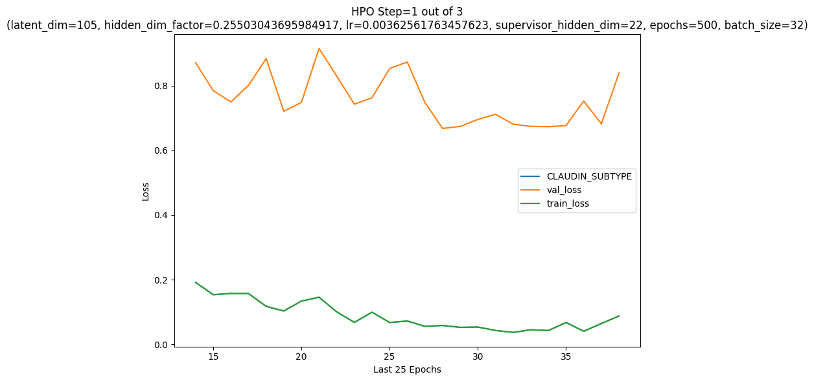
LOCAL_RANK: 0 - CUDA_VISIBLE_DEVICES: [0,1,2]
┏━━━━━━━━━━━━━━━━━━━━━━━━━━━┳━━━━━━━━━━━━━━━━━━━━━━━━━━━┓ ┃ Validate metric ┃ DataLoader 0 ┃ ┡━━━━━━━━━━━━━━━━━━━━━━━━━━━╇━━━━━━━━━━━━━━━━━━━━━━━━━━━┩ │ CLAUDIN_SUBTYPE │ 0.8388789296150208 │ │ val_loss │ 0.8388789296150208 │ └───────────────────────────┴───────────────────────────┘
Tuning Progress: 33%|███▎ | 1/3 [00:18<00:37, 18.64s/it, Iteration=1, Best Loss=0.839]GPU available: True (cuda), used: True
TPU available: False, using: 0 TPU cores
💡 Tip: For seamless cloud logging and experiment tracking, try installing [litlogger](https://pypi.org/project/litlogger/) to enable LitLogger, which logs metrics and artifacts automatically to the Lightning Experiments platform.
LOCAL_RANK: 0 - CUDA_VISIBLE_DEVICES: [0,1,2]
[INFO] current best val loss: 0.8388789296150208; best params: {'latent_dim': 105, 'hidden_dim_factor': 0.25503043695984917, 'lr': 0.00362561763457623, 'supervisor_hidden_dim': 22, 'epochs': 500, 'batch_size': 32} since 0 hpo iterations
[INFO] training validation split 1
[INFO] hpo config:{'latent_dim': 67, 'hidden_dim_factor': 0.3001125833417066, 'lr': 0.0001930783753654713, 'supervisor_hidden_dim': 24, 'epochs': 500, 'batch_size': 128}
┏━━━┳━━━━━━━━━━━━━━┳━━━━━━━━━━━━━━━┳━━━━━━━━┳━━━━━━━┳━━━━━━━┓ ┃ ┃ Name ┃ Type ┃ Params ┃ Mode ┃ FLOPs ┃ ┡━━━╇━━━━━━━━━━━━━━╇━━━━━━━━━━━━━━━╇━━━━━━━━╇━━━━━━━╇━━━━━━━┩ │ 0 │ log_vars │ ParameterDict │ 1 │ train │ 0 │ │ 1 │ encoders │ ModuleList │ 119 K │ train │ 0 │ │ 2 │ fusion_block │ Linear │ 9.0 K │ train │ 0 │ │ 3 │ MLPs │ ModuleDict │ 1.9 K │ train │ 0 │ └───┴──────────────┴───────────────┴────────┴───────┴───────┘
Trainable params: 130 K Non-trainable params: 0 Total params: 130 K Total estimated model params size (MB): 0 Modules in train mode: 22 Modules in eval mode: 0 Total FLOPs: 0
/home/cykim/miniforge3/envs/flexy/lib/python3.12/site-packages/lightning/pytorch/utilities/data.py:79: UserWarning: Trying to infer the `batch_size` from an ambiguous collection. The batch size we found is 39. To avoid any miscalculations, use `self.log(..., batch_size=batch_size)`.
/home/cykim/miniforge3/envs/flexy/lib/python3.12/site-packages/lightning/pytorch/utilities/data.py:79: UserWarning: Trying to infer the `batch_size` from an ambiguous collection. The batch size we found is 128. To avoid any miscalculations, use `self.log(..., batch_size=batch_size)`.
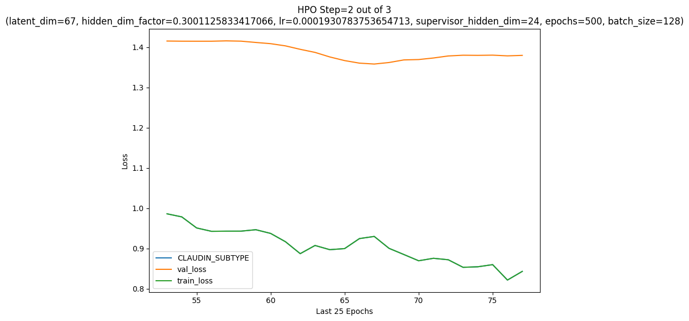
LOCAL_RANK: 0 - CUDA_VISIBLE_DEVICES: [0,1,2]
┏━━━━━━━━━━━━━━━━━━━━━━━━━━━┳━━━━━━━━━━━━━━━━━━━━━━━━━━━┓ ┃ Validate metric ┃ DataLoader 0 ┃ ┡━━━━━━━━━━━━━━━━━━━━━━━━━━━╇━━━━━━━━━━━━━━━━━━━━━━━━━━━┩ │ CLAUDIN_SUBTYPE │ 1.3795346021652222 │ │ val_loss │ 1.3795346021652222 │ └───────────────────────────┴───────────────────────────┘
Tuning Progress: 67%|██████▋ | 2/3 [00:43<00:22, 22.34s/it, Iteration=2, Best Loss=0.839]GPU available: True (cuda), used: True
TPU available: False, using: 0 TPU cores
💡 Tip: For seamless cloud logging and experiment tracking, try installing [litlogger](https://pypi.org/project/litlogger/) to enable LitLogger, which logs metrics and artifacts automatically to the Lightning Experiments platform.
LOCAL_RANK: 0 - CUDA_VISIBLE_DEVICES: [0,1,2]
[INFO] current best val loss: 0.8388789296150208; best params: {'latent_dim': 105, 'hidden_dim_factor': 0.25503043695984917, 'lr': 0.00362561763457623, 'supervisor_hidden_dim': 22, 'epochs': 500, 'batch_size': 32} since 1 hpo iterations
[INFO] training validation split 1
[INFO] hpo config:{'latent_dim': 121, 'hidden_dim_factor': 0.2002336297523043, 'lr': 0.009647685075720105, 'supervisor_hidden_dim': 23, 'epochs': 500, 'batch_size': 32}
┏━━━┳━━━━━━━━━━━━━━┳━━━━━━━━━━━━━━━┳━━━━━━━━┳━━━━━━━┳━━━━━━━┓ ┃ ┃ Name ┃ Type ┃ Params ┃ Mode ┃ FLOPs ┃ ┡━━━╇━━━━━━━━━━━━━━╇━━━━━━━━━━━━━━━╇━━━━━━━━╇━━━━━━━╇━━━━━━━┩ │ 0 │ log_vars │ ParameterDict │ 1 │ train │ 0 │ │ 1 │ encoders │ ModuleList │ 88.6 K │ train │ 0 │ │ 2 │ fusion_block │ Linear │ 29.4 K │ train │ 0 │ │ 3 │ MLPs │ ModuleDict │ 3.0 K │ train │ 0 │ └───┴──────────────┴───────────────┴────────┴───────┴───────┘
Trainable params: 121 K Non-trainable params: 0 Total params: 121 K Total estimated model params size (MB): 0 Modules in train mode: 22 Modules in eval mode: 0 Total FLOPs: 0
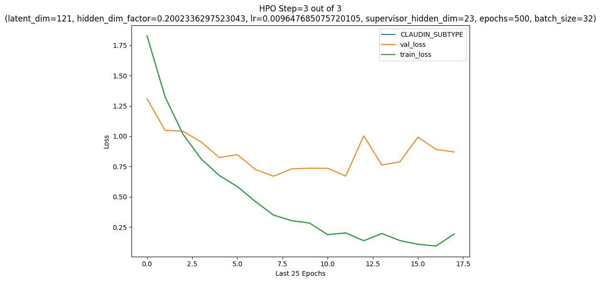
LOCAL_RANK: 0 - CUDA_VISIBLE_DEVICES: [0,1,2]
┏━━━━━━━━━━━━━━━━━━━━━━━━━━━┳━━━━━━━━━━━━━━━━━━━━━━━━━━━┓ ┃ Validate metric ┃ DataLoader 0 ┃ ┡━━━━━━━━━━━━━━━━━━━━━━━━━━━╇━━━━━━━━━━━━━━━━━━━━━━━━━━━┩ │ CLAUDIN_SUBTYPE │ 0.8699294924736023 │ │ val_loss │ 0.8699294924736023 │ └───────────────────────────┴───────────────────────────┘
Tuning Progress: 100%|██████████| 3/3 [00:51<00:00, 17.27s/it, Iteration=3, Best Loss=0.839]
[INFO] current best val loss: 0.8388789296150208; best params: {'latent_dim': 105, 'hidden_dim_factor': 0.25503043695984917, 'lr': 0.00362561763457623, 'supervisor_hidden_dim': 22, 'epochs': 500, 'batch_size': 32} since 2 hpo iterations
Best params: {'latent_dim': 105, 'hidden_dim_factor': 0.25503043695984917, 'lr': 0.00362561763457623, 'supervisor_hidden_dim': 22, 'epochs': 38, 'batch_size': 32}
소요 시간: 0.9분 (52초)
저장 완료: ./models/DirectPred_clf.pth
metrics_dp = flexynesis.utils.evaluate_wrapper(
method='DirectPred', # 결과 테이블에 표시될 모델 이름 (자유롭게 지정)
y_pred_dict=model_dp.predict(test_dataset), # model.predict()의 반환값
dataset=test_dataset, # 평가할 dataset (test)
surv_event_var=None, # 생존분석일 때만 지정 (예: 'OS_STATUS')
surv_time_var=None, # 생존분석일 때만 지정 (예: 'OS_MONTHS')
# 반환 메트릭:
# - categorical: balanced_acc, f1_score, kappa, average_auroc, average_aupr
# - numerical: mse, r2, pearson_corr
# - survival: cindex
)
all_metrics.append(metrics_dp)
metrics_dp
| method | var | variable_type | metric | value | |
|---|---|---|---|---|---|
| 0 | DirectPred | CLAUDIN_SUBTYPE | categorical | balanced_acc | 0.578612 |
| 1 | DirectPred | CLAUDIN_SUBTYPE | categorical | f1_score | 0.717311 |
| 2 | DirectPred | CLAUDIN_SUBTYPE | categorical | kappa | 0.648913 |
| 3 | DirectPred | CLAUDIN_SUBTYPE | categorical | average_auroc | 0.914193 |
| 4 | DirectPred | CLAUDIN_SUBTYPE | categorical | average_aupr | 0.769647 |
# model.transform(): latent embedding 추출 (samples × latent_dim DataFrame)
E_dp = model_dp.transform(test_dataset)
labels = [test_dataset.label_mappings['CLAUDIN_SUBTYPE'][x] for x in test_dataset.ann['CLAUDIN_SUBTYPE'].numpy()]
flexynesis.utils.plot_dim_reduced(
E_dp, # embedding DataFrame (samples × dims)
labels, # 색칠할 레이블 리스트
method='umap', # 차원축소 방법: 'pca' or 'umap'
color_type='categorical', # 'categorical'=이산형 / 'numerical'=연속형 (gradient)
title=None, # 플롯 제목 (None=자동)
)
{kind=link}
Section 2. DirectPred — 생존분석#
Loss: Cox Proportional Hazards
평가: C-index (0.5=랜덤, 1.0=완벽)
BRCA clin.csv에 OS_STATUS (0/1), OS_MONTHS 있음
tuner_surv = flexynesis.main.HyperparameterTuning(
train_dataset,
model_class=flexynesis.models.DirectPred,
config_name='DirectPred',
target_variables=[], # 생존만 할 때는 빈 리스트 (추가 변수 예측 없음)
surv_event_var='OS_STATUS', # 사건 변수: 0=생존, 1=사망 (integer)
surv_time_var='OS_MONTHS', # 생존 시간 변수 (연속형 숫자)
# --- HPO 설정 ---
n_iter=HPO_ITER,
config_path=None,
val_size=0.2,
use_cv=False,
cv_splits=5,
# --- 학습 설정 ---
use_loss_weighting=True,
early_stop_patience=10,
plot_losses=True,
batch_variables=None,
device_type=None,
)
_t0 = time.time()
model_surv, params_surv = tuner_surv.perform_tuning()
print("Best params:", params_surv)
_elapsed = time.time() - _t0
training_log.append({'model': 'DirectPred (생존분석)', 'time_sec': _elapsed, 'hpo_iter': HPO_ITER})
print(f'소요 시간: {_elapsed/60:.1f}분 ({_elapsed:.0f}초)')
os.makedirs('./models', exist_ok=True)
torch.save(model_surv, f'./models/DirectPred_surv.pth')
print(f'저장 완료: ./models/DirectPred_surv.pth')
Tuning Progress: 0%| | 0/3 [00:00<?, ?it/s]/home/cykim/miniforge3/envs/flexy/lib/python3.12/site-packages/lightning/fabric/plugins/environments/slurm.py:204: PossibleUserWarning: The `srun` command is available on your system but is not used. HINT: If your intention is to run Lightning on SLURM, prepend your python command with `srun` like so: srun python /home/cykim/miniforge3/envs/flexy/lib/python3.12/sit ...
GPU available: True (cuda), used: True
TPU available: False, using: 0 TPU cores
💡 Tip: For seamless cloud logging and experiment tracking, try installing [litlogger](https://pypi.org/project/litlogger/) to enable LitLogger, which logs metrics and artifacts automatically to the Lightning Experiments platform.
LOCAL_RANK: 0 - CUDA_VISIBLE_DEVICES: [0,1,2]
[INFO] training validation split 1
[INFO] hpo config:{'latent_dim': 100, 'hidden_dim_factor': 0.31789683469365776, 'lr': 0.0045533228152233925, 'supervisor_hidden_dim': 22, 'epochs': 500, 'batch_size': 32}
┏━━━┳━━━━━━━━━━━━━━┳━━━━━━━━━━━━━━━┳━━━━━━━━┳━━━━━━━┳━━━━━━━┓ ┃ ┃ Name ┃ Type ┃ Params ┃ Mode ┃ FLOPs ┃ ┡━━━╇━━━━━━━━━━━━━━╇━━━━━━━━━━━━━━━╇━━━━━━━━╇━━━━━━━╇━━━━━━━┩ │ 0 │ log_vars │ ParameterDict │ 1 │ train │ 0 │ │ 1 │ encoders │ ModuleList │ 134 K │ train │ 0 │ │ 2 │ fusion_block │ Linear │ 20.1 K │ train │ 0 │ │ 3 │ MLPs │ ModuleDict │ 2.3 K │ train │ 0 │ └───┴──────────────┴───────────────┴────────┴───────┴───────┘
Trainable params: 157 K Non-trainable params: 0 Total params: 157 K Total estimated model params size (MB): 0 Modules in train mode: 22 Modules in eval mode: 0 Total FLOPs: 0
/home/cykim/miniforge3/envs/flexy/lib/python3.12/site-packages/lightning/pytorch/utilities/_pytree.py:21: FutureWarning: `isinstance(treespec, LeafSpec)` is deprecated, use `isinstance(treespec, TreeSpec) and treespec.is_leaf()` instead.
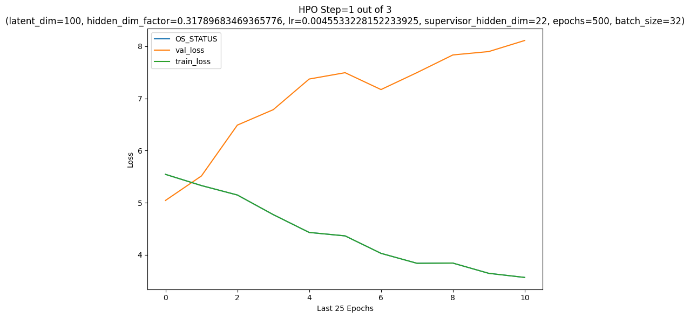
LOCAL_RANK: 0 - CUDA_VISIBLE_DEVICES: [0,1,2]
┏━━━━━━━━━━━━━━━━━━━━━━━━━━━┳━━━━━━━━━━━━━━━━━━━━━━━━━━━┓ ┃ Validate metric ┃ DataLoader 0 ┃ ┡━━━━━━━━━━━━━━━━━━━━━━━━━━━╇━━━━━━━━━━━━━━━━━━━━━━━━━━━┩ │ OS_STATUS │ 8.112386703491211 │ │ val_loss │ 8.112386703491211 │ └───────────────────────────┴───────────────────────────┘
Tuning Progress: 33%|███▎ | 1/3 [00:06<00:12, 6.32s/it, Iteration=1, Best Loss=8.11]GPU available: True (cuda), used: True
TPU available: False, using: 0 TPU cores
💡 Tip: For seamless cloud logging and experiment tracking, try installing [litlogger](https://pypi.org/project/litlogger/) to enable LitLogger, which logs metrics and artifacts automatically to the Lightning Experiments platform.
LOCAL_RANK: 0 - CUDA_VISIBLE_DEVICES: [0,1,2]
[INFO] current best val loss: 8.112386703491211; best params: {'latent_dim': 100, 'hidden_dim_factor': 0.31789683469365776, 'lr': 0.0045533228152233925, 'supervisor_hidden_dim': 22, 'epochs': 500, 'batch_size': 32} since 0 hpo iterations
[INFO] training validation split 1
[INFO] hpo config:{'latent_dim': 18, 'hidden_dim_factor': 0.2226077181057387, 'lr': 0.002417846882276413, 'supervisor_hidden_dim': 21, 'epochs': 500, 'batch_size': 64}
┏━━━┳━━━━━━━━━━━━━━┳━━━━━━━━━━━━━━━┳━━━━━━━━┳━━━━━━━┳━━━━━━━┓ ┃ ┃ Name ┃ Type ┃ Params ┃ Mode ┃ FLOPs ┃ ┡━━━╇━━━━━━━━━━━━━━╇━━━━━━━━━━━━━━━╇━━━━━━━━╇━━━━━━━╇━━━━━━━┩ │ 0 │ log_vars │ ParameterDict │ 1 │ train │ 0 │ │ 1 │ encoders │ ModuleList │ 79.4 K │ train │ 0 │ │ 2 │ fusion_block │ Linear │ 666 │ train │ 0 │ │ 3 │ MLPs │ ModuleDict │ 485 │ train │ 0 │ └───┴──────────────┴───────────────┴────────┴───────┴───────┘
Trainable params: 80.5 K Non-trainable params: 0 Total params: 80.5 K Total estimated model params size (MB): 0 Modules in train mode: 22 Modules in eval mode: 0 Total FLOPs: 0
/home/cykim/miniforge3/envs/flexy/lib/python3.12/site-packages/lightning/pytorch/utilities/data.py:79: UserWarning: Trying to infer the `batch_size` from an ambiguous collection. The batch size we found is 64. To avoid any miscalculations, use `self.log(..., batch_size=batch_size)`.
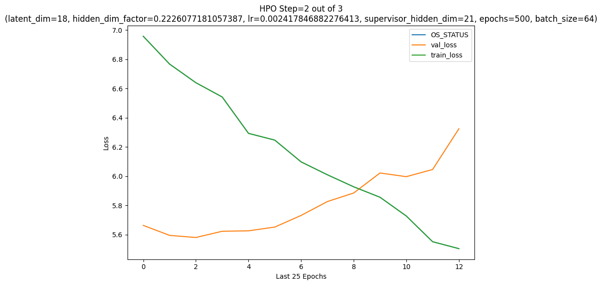
LOCAL_RANK: 0 - CUDA_VISIBLE_DEVICES: [0,1,2]
┏━━━━━━━━━━━━━━━━━━━━━━━━━━━┳━━━━━━━━━━━━━━━━━━━━━━━━━━━┓ ┃ Validate metric ┃ DataLoader 0 ┃ ┡━━━━━━━━━━━━━━━━━━━━━━━━━━━╇━━━━━━━━━━━━━━━━━━━━━━━━━━━┩ │ OS_STATUS │ 6.324275493621826 │ │ val_loss │ 6.324275493621826 │ └───────────────────────────┴───────────────────────────┘
Tuning Progress: 67%|██████▋ | 2/3 [00:09<00:04, 4.76s/it, Iteration=2, Best Loss=6.32]GPU available: True (cuda), used: True
TPU available: False, using: 0 TPU cores
💡 Tip: For seamless cloud logging and experiment tracking, try installing [litlogger](https://pypi.org/project/litlogger/) to enable LitLogger, which logs metrics and artifacts automatically to the Lightning Experiments platform.
LOCAL_RANK: 0 - CUDA_VISIBLE_DEVICES: [0,1,2]
[INFO] current best val loss: 6.324275493621826; best params: {'latent_dim': 18, 'hidden_dim_factor': 0.2226077181057387, 'lr': 0.002417846882276413, 'supervisor_hidden_dim': 21, 'epochs': 500, 'batch_size': 64} since 0 hpo iterations
[INFO] training validation split 1
[INFO] hpo config:{'latent_dim': 97, 'hidden_dim_factor': 0.42712436061273684, 'lr': 0.0005697719939974019, 'supervisor_hidden_dim': 14, 'epochs': 500, 'batch_size': 32}
┏━━━┳━━━━━━━━━━━━━━┳━━━━━━━━━━━━━━━┳━━━━━━━━┳━━━━━━━┳━━━━━━━┓ ┃ ┃ Name ┃ Type ┃ Params ┃ Mode ┃ FLOPs ┃ ┡━━━╇━━━━━━━━━━━━━━╇━━━━━━━━━━━━━━━╇━━━━━━━━╇━━━━━━━╇━━━━━━━┩ │ 0 │ log_vars │ ParameterDict │ 1 │ train │ 0 │ │ 1 │ encoders │ ModuleList │ 180 K │ train │ 0 │ │ 2 │ fusion_block │ Linear │ 18.9 K │ train │ 0 │ │ 3 │ MLPs │ ModuleDict │ 1.4 K │ train │ 0 │ └───┴──────────────┴───────────────┴────────┴───────┴───────┘
Trainable params: 200 K Non-trainable params: 0 Total params: 200 K Total estimated model params size (MB): 0 Modules in train mode: 22 Modules in eval mode: 0 Total FLOPs: 0
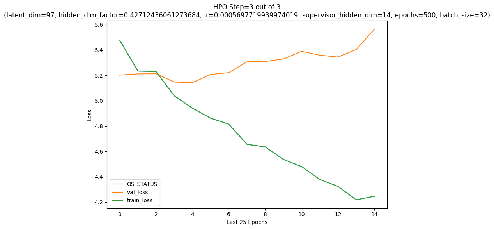
LOCAL_RANK: 0 - CUDA_VISIBLE_DEVICES: [0,1,2]
┏━━━━━━━━━━━━━━━━━━━━━━━━━━━┳━━━━━━━━━━━━━━━━━━━━━━━━━━━┓ ┃ Validate metric ┃ DataLoader 0 ┃ ┡━━━━━━━━━━━━━━━━━━━━━━━━━━━╇━━━━━━━━━━━━━━━━━━━━━━━━━━━┩ │ OS_STATUS │ 5.56448221206665 │ │ val_loss │ 5.56448221206665 │ └───────────────────────────┴───────────────────────────┘
Tuning Progress: 100%|██████████| 3/3 [00:15<00:00, 5.08s/it, Iteration=3, Best Loss=5.56]
[INFO] current best val loss: 5.56448221206665; best params: {'latent_dim': 97, 'hidden_dim_factor': 0.42712436061273684, 'lr': 0.0005697719939974019, 'supervisor_hidden_dim': 14, 'epochs': 500, 'batch_size': 32} since 0 hpo iterations
Best params: {'latent_dim': 97, 'hidden_dim_factor': 0.42712436061273684, 'lr': 0.0005697719939974019, 'supervisor_hidden_dim': 14, 'epochs': 14, 'batch_size': 32}
소요 시간: 0.3분 (15초)
저장 완료: ./models/DirectPred_surv.pth
metrics_surv = flexynesis.utils.evaluate_wrapper(
method='DirectPred_survival',
y_pred_dict=model_surv.predict(test_dataset),
dataset=test_dataset,
surv_event_var=model_surv.surv_event_var,
surv_time_var=model_surv.surv_time_var,
)
all_metrics.append(metrics_surv)
metrics_surv
| method | var | variable_type | metric | value | |
|---|---|---|---|---|---|
| 0 | DirectPred_survival | OS_STATUS | categorical | balanced_acc | 0.500000 |
| 1 | DirectPred_survival | OS_STATUS | categorical | f1_score | 0.450000 |
| 2 | DirectPred_survival | OS_STATUS | categorical | kappa | 0.000000 |
| 3 | DirectPred_survival | OS_STATUS | categorical | average_auroc | 0.480469 |
| 4 | DirectPred_survival | OS_STATUS | categorical | average_aupr | 0.550953 |
# risk score = exp(log-hazard): 값이 클수록 고위험
outputs = model_surv.predict(test_dataset)['OS_STATUS']
# OS_STATUS가 categorical로 인식되면 (n, 2) shape → 첫 번째 컬럼만 사용
if outputs.ndim > 1:
outputs = outputs[:, 0]
risk_scores = np.exp(outputs.flatten())
groups = np.digitize(risk_scores, np.quantile(risk_scores, [0.5])) # 중앙값 기준 0=Low, 1=High
durations = test_dataset.ann['OS_MONTHS'].float()
events = test_dataset.ann['OS_STATUS'].float()
valid_t = ~torch.isnan(durations) & ~torch.isnan(events) # NaN 샘플 제거 (torch bool)
valid_np = valid_t.numpy() # numpy 변환 (groups 인덱싱용)
flexynesis.utils.plot_kaplan_meier_curves(
durations[valid_t], # 생존 시간 벡터
events[valid_t], # 사건 발생 여부 벡터 (0/1)
groups[valid_np], # 그룹 레이블 (numpy array라 numpy bool 필요)
)
{kind=link}
Section 3. supervised_vae — 분류#
구조: Encoder → FC_mean / FC_log_var → reparameterize → Decoder + supervisor head
Loss: MMD (latent regularization) + NLL (reconstruction) + CE (supervisor)
tuner_vae = flexynesis.main.HyperparameterTuning(
dataset=train_dataset,
model_class=flexynesis.models.supervised_vae,
target_variables=['CLAUDIN_SUBTYPE'],
config_name='supervised_vae',
# --- HPO 설정 ---
n_iter=HPO_ITER,
config_path=None,
val_size=0.2,
use_cv=False,
cv_splits=5,
# --- 학습 설정 ---
use_loss_weighting=True,
early_stop_patience=10,
plot_losses=True,
surv_event_var=None,
surv_time_var=None,
batch_variables=None,
device_type=None,
)
_t0 = time.time()
model_vae, params_vae = tuner_vae.perform_tuning()
print("Best params:", params_vae)
_elapsed = time.time() - _t0
training_log.append({'model': 'supervised_vae (분류)', 'time_sec': _elapsed, 'hpo_iter': HPO_ITER})
print(f'소요 시간: {_elapsed/60:.1f}분 ({_elapsed:.0f}초)')
os.makedirs('./models', exist_ok=True)
torch.save(model_vae, f'./models/supervised_vae_clf.pth')
print(f'저장 완료: ./models/supervised_vae_clf.pth')
Tuning Progress: 0%| | 0/3 [00:00<?, ?it/s]/home/cykim/miniforge3/envs/flexy/lib/python3.12/site-packages/lightning/fabric/plugins/environments/slurm.py:204: PossibleUserWarning: The `srun` command is available on your system but is not used. HINT: If your intention is to run Lightning on SLURM, prepend your python command with `srun` like so: srun python /home/cykim/miniforge3/envs/flexy/lib/python3.12/sit ...
GPU available: True (cuda), used: True
TPU available: False, using: 0 TPU cores
💡 Tip: For seamless cloud logging and experiment tracking, try installing [litlogger](https://pypi.org/project/litlogger/) to enable LitLogger, which logs metrics and artifacts automatically to the Lightning Experiments platform.
LOCAL_RANK: 0 - CUDA_VISIBLE_DEVICES: [0,1,2]
[INFO] training validation split 1
[INFO] hpo config:{'latent_dim': 42, 'hidden_dim_factor': 0.4015102053217571, 'supervisor_hidden_dim': 23, 'lr': 0.0005203857985647049, 'epochs': 500, 'batch_size': 128}
┏━━━┳━━━━━━━━━━━━┳━━━━━━━━━━━━━━━┳━━━━━━━━┳━━━━━━━┳━━━━━━━┓ ┃ ┃ Name ┃ Type ┃ Params ┃ Mode ┃ FLOPs ┃ ┡━━━╇━━━━━━━━━━━━╇━━━━━━━━━━━━━━━╇━━━━━━━━╇━━━━━━━╇━━━━━━━┩ │ 0 │ log_vars │ ParameterDict │ 2 │ train │ 0 │ │ 1 │ encoders │ ModuleList │ 165 K │ train │ 0 │ │ 2 │ FC_mean │ Linear │ 3.6 K │ train │ 0 │ │ 3 │ FC_log_var │ Linear │ 3.6 K │ train │ 0 │ │ 4 │ decoders │ ModuleList │ 152 K │ train │ 0 │ │ 5 │ MLPs │ ModuleDict │ 1.2 K │ train │ 0 │ └───┴────────────┴───────────────┴────────┴───────┴───────┘
Trainable params: 325 K Non-trainable params: 0 Total params: 325 K Total estimated model params size (MB): 1 Modules in train mode: 38 Modules in eval mode: 0 Total FLOPs: 0
/home/cykim/miniforge3/envs/flexy/lib/python3.12/site-packages/lightning/pytorch/utilities/_pytree.py:21: FutureWarning: `isinstance(treespec, LeafSpec)` is deprecated, use `isinstance(treespec, TreeSpec) and treespec.is_leaf()` instead.
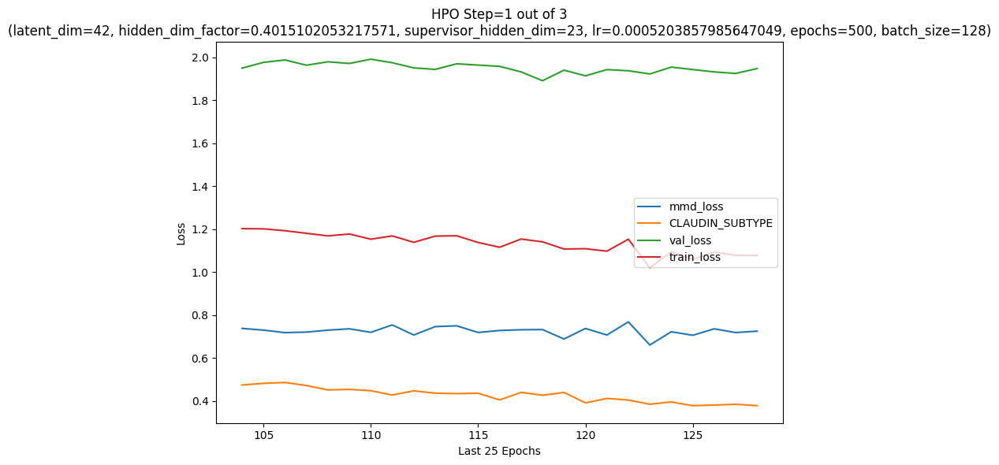
LOCAL_RANK: 0 - CUDA_VISIBLE_DEVICES: [0,1,2]
┏━━━━━━━━━━━━━━━━━━━━━━━━━━━┳━━━━━━━━━━━━━━━━━━━━━━━━━━━┓ ┃ Validate metric ┃ DataLoader 0 ┃ ┡━━━━━━━━━━━━━━━━━━━━━━━━━━━╇━━━━━━━━━━━━━━━━━━━━━━━━━━━┩ │ CLAUDIN_SUBTYPE │ 1.2416714429855347 │ │ mmd_loss │ 0.7029315829277039 │ │ val_loss │ 1.9446029663085938 │ └───────────────────────────┴───────────────────────────┘
Tuning Progress: 33%|███▎ | 1/3 [00:41<01:22, 41.47s/it, Iteration=1, Best Loss=1.94]GPU available: True (cuda), used: True
TPU available: False, using: 0 TPU cores
💡 Tip: For seamless cloud logging and experiment tracking, try installing [litlogger](https://pypi.org/project/litlogger/) to enable LitLogger, which logs metrics and artifacts automatically to the Lightning Experiments platform.
LOCAL_RANK: 0 - CUDA_VISIBLE_DEVICES: [0,1,2]
[INFO] current best val loss: 1.9446029663085938; best params: {'latent_dim': 42, 'hidden_dim_factor': 0.4015102053217571, 'supervisor_hidden_dim': 23, 'lr': 0.0005203857985647049, 'epochs': 500, 'batch_size': 128} since 0 hpo iterations
[INFO] training validation split 1
[INFO] hpo config:{'latent_dim': 74, 'hidden_dim_factor': 0.43169551752069185, 'supervisor_hidden_dim': 20, 'lr': 0.005062476271565483, 'epochs': 500, 'batch_size': 64}
┏━━━┳━━━━━━━━━━━━┳━━━━━━━━━━━━━━━┳━━━━━━━━┳━━━━━━━┳━━━━━━━┓ ┃ ┃ Name ┃ Type ┃ Params ┃ Mode ┃ FLOPs ┃ ┡━━━╇━━━━━━━━━━━━╇━━━━━━━━━━━━━━━╇━━━━━━━━╇━━━━━━━╇━━━━━━━┩ │ 0 │ log_vars │ ParameterDict │ 2 │ train │ 0 │ │ 1 │ encoders │ ModuleList │ 200 K │ train │ 0 │ │ 2 │ FC_mean │ Linear │ 11.0 K │ train │ 0 │ │ 3 │ FC_log_var │ Linear │ 11.0 K │ train │ 0 │ │ 4 │ decoders │ ModuleList │ 174 K │ train │ 0 │ │ 5 │ MLPs │ ModuleDict │ 1.7 K │ train │ 0 │ └───┴────────────┴───────────────┴────────┴───────┴───────┘
Trainable params: 399 K Non-trainable params: 0 Total params: 399 K Total estimated model params size (MB): 1 Modules in train mode: 38 Modules in eval mode: 0 Total FLOPs: 0
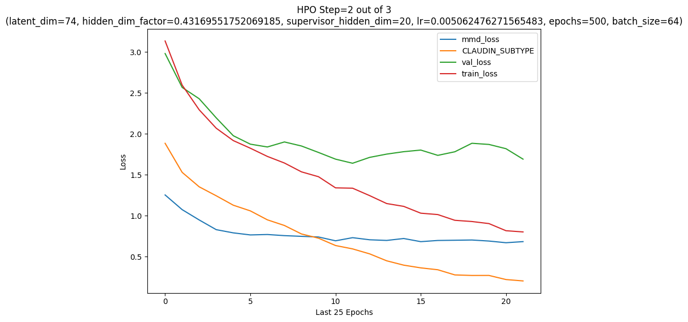
LOCAL_RANK: 0 - CUDA_VISIBLE_DEVICES: [0,1,2]
┏━━━━━━━━━━━━━━━━━━━━━━━━━━━┳━━━━━━━━━━━━━━━━━━━━━━━━━━━┓ ┃ Validate metric ┃ DataLoader 0 ┃ ┡━━━━━━━━━━━━━━━━━━━━━━━━━━━╇━━━━━━━━━━━━━━━━━━━━━━━━━━━┩ │ CLAUDIN_SUBTYPE │ 1.0014084577560425 │ │ mmd_loss │ 0.7334603071212769 │ │ val_loss │ 1.7348687648773193 │ └───────────────────────────┴───────────────────────────┘
Tuning Progress: 67%|██████▋ | 2/3 [00:49<00:21, 21.84s/it, Iteration=2, Best Loss=1.73]GPU available: True (cuda), used: True
TPU available: False, using: 0 TPU cores
💡 Tip: For seamless cloud logging and experiment tracking, try installing [litlogger](https://pypi.org/project/litlogger/) to enable LitLogger, which logs metrics and artifacts automatically to the Lightning Experiments platform.
LOCAL_RANK: 0 - CUDA_VISIBLE_DEVICES: [0,1,2]
[INFO] current best val loss: 1.7348687648773193; best params: {'latent_dim': 74, 'hidden_dim_factor': 0.43169551752069185, 'supervisor_hidden_dim': 20, 'lr': 0.005062476271565483, 'epochs': 500, 'batch_size': 64} since 0 hpo iterations
[INFO] training validation split 1
[INFO] hpo config:{'latent_dim': 114, 'hidden_dim_factor': 0.32104485986371917, 'supervisor_hidden_dim': 11, 'lr': 0.00011417350999721898, 'epochs': 500, 'batch_size': 64}
┏━━━┳━━━━━━━━━━━━┳━━━━━━━━━━━━━━━┳━━━━━━━━┳━━━━━━━┳━━━━━━━┓ ┃ ┃ Name ┃ Type ┃ Params ┃ Mode ┃ FLOPs ┃ ┡━━━╇━━━━━━━━━━━━╇━━━━━━━━━━━━━━━╇━━━━━━━━╇━━━━━━━╇━━━━━━━┩ │ 0 │ log_vars │ ParameterDict │ 2 │ train │ 0 │ │ 1 │ encoders │ ModuleList │ 170 K │ train │ 0 │ │ 2 │ FC_mean │ Linear │ 26.1 K │ train │ 0 │ │ 3 │ FC_log_var │ Linear │ 26.1 K │ train │ 0 │ │ 4 │ decoders │ ModuleList │ 140 K │ train │ 0 │ │ 5 │ MLPs │ ModuleDict │ 1.4 K │ train │ 0 │ └───┴────────────┴───────────────┴────────┴───────┴───────┘
Trainable params: 364 K Non-trainable params: 0 Total params: 364 K Total estimated model params size (MB): 1 Modules in train mode: 38 Modules in eval mode: 0 Total FLOPs: 0
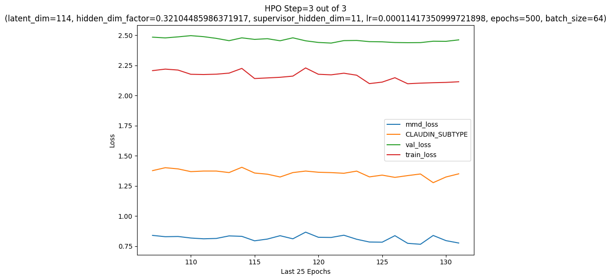
LOCAL_RANK: 0 - CUDA_VISIBLE_DEVICES: [0,1,2]
┏━━━━━━━━━━━━━━━━━━━━━━━━━━━┳━━━━━━━━━━━━━━━━━━━━━━━━━━━┓ ┃ Validate metric ┃ DataLoader 0 ┃ ┡━━━━━━━━━━━━━━━━━━━━━━━━━━━╇━━━━━━━━━━━━━━━━━━━━━━━━━━━┩ │ CLAUDIN_SUBTYPE │ 1.6210564374923706 │ │ mmd_loss │ 0.8342165946960449 │ │ val_loss │ 2.455273151397705 │ └───────────────────────────┴───────────────────────────┘
Tuning Progress: 100%|██████████| 3/3 [01:34<00:00, 31.50s/it, Iteration=3, Best Loss=1.73]
[INFO] current best val loss: 1.7348687648773193; best params: {'latent_dim': 74, 'hidden_dim_factor': 0.43169551752069185, 'supervisor_hidden_dim': 20, 'lr': 0.005062476271565483, 'epochs': 500, 'batch_size': 64} since 1 hpo iterations
Best params: {'latent_dim': 74, 'hidden_dim_factor': 0.43169551752069185, 'supervisor_hidden_dim': 20, 'lr': 0.005062476271565483, 'epochs': 21, 'batch_size': 64}
소요 시간: 1.6분 (95초)
저장 완료: ./models/supervised_vae_clf.pth
metrics_vae = flexynesis.utils.evaluate_wrapper(
method='supervised_vae',
y_pred_dict=model_vae.predict(test_dataset),
dataset=test_dataset,
)
all_metrics.append(metrics_vae)
metrics_vae
| method | var | variable_type | metric | value | |
|---|---|---|---|---|---|
| 0 | supervised_vae | CLAUDIN_SUBTYPE | categorical | balanced_acc | 0.593459 |
| 1 | supervised_vae | CLAUDIN_SUBTYPE | categorical | f1_score | 0.718927 |
| 2 | supervised_vae | CLAUDIN_SUBTYPE | categorical | kappa | 0.655808 |
| 3 | supervised_vae | CLAUDIN_SUBTYPE | categorical | average_auroc | 0.900751 |
| 4 | supervised_vae | CLAUDIN_SUBTYPE | categorical | average_aupr | 0.796573 |
E_vae = model_vae.transform(test_dataset)
flexynesis.utils.plot_dim_reduced(E_vae, labels, color_type='categorical', method='umap')
{kind=link}
Section 4. supervised_vae — 비지도#
target_variables=[] → supervisor head 없이 순수 VAE
Louvain 클러스터링 후 CLAUDIN_SUBTYPE과 AMI/ARI 비교
tuner_unsup = flexynesis.main.HyperparameterTuning(
dataset=train_dataset,
model_class=flexynesis.models.supervised_vae,
target_variables=[], # 빈 리스트 → supervisor head 없이 순수 VAE
config_name='supervised_vae',
# --- HPO 설정 ---
n_iter=HPO_ITER,
config_path=None,
val_size=0.2,
use_cv=False,
cv_splits=5,
# --- 학습 설정 ---
use_loss_weighting=True,
early_stop_patience=5, # 비지도는 수렴 빠르므로 patience 짧게
plot_losses=True,
surv_event_var=None,
surv_time_var=None,
batch_variables=None,
device_type=None,
)
_t0 = time.time()
model_unsup, _ = tuner_unsup.perform_tuning()
_elapsed = time.time() - _t0
training_log.append({'model': 'supervised_vae (비지도)', 'time_sec': _elapsed, 'hpo_iter': HPO_ITER})
print(f'소요 시간: {_elapsed/60:.1f}분 ({_elapsed:.0f}초)')
os.makedirs('./models', exist_ok=True)
torch.save(model_unsup, f'./models/supervised_vae_unsup.pth')
print(f'저장 완료: ./models/supervised_vae_unsup.pth')
Tuning Progress: 0%| | 0/3 [00:00<?, ?it/s]/home/cykim/miniforge3/envs/flexy/lib/python3.12/site-packages/lightning/fabric/plugins/environments/slurm.py:204: PossibleUserWarning: The `srun` command is available on your system but is not used. HINT: If your intention is to run Lightning on SLURM, prepend your python command with `srun` like so: srun python /home/cykim/miniforge3/envs/flexy/lib/python3.12/sit ...
GPU available: True (cuda), used: True
TPU available: False, using: 0 TPU cores
💡 Tip: For seamless cloud logging and experiment tracking, try installing [litlogger](https://pypi.org/project/litlogger/) to enable LitLogger, which logs metrics and artifacts automatically to the Lightning Experiments platform.
LOCAL_RANK: 0 - CUDA_VISIBLE_DEVICES: [0,1,2]
[INFO] training validation split 1
[INFO] hpo config:{'latent_dim': 43, 'hidden_dim_factor': 0.2331422339394184, 'supervisor_hidden_dim': 17, 'lr': 0.00037538592368527556, 'epochs': 500, 'batch_size': 32}
┏━━━┳━━━━━━━━━━━━┳━━━━━━━━━━━━━━━┳━━━━━━━━┳━━━━━━━┳━━━━━━━┓ ┃ ┃ Name ┃ Type ┃ Params ┃ Mode ┃ FLOPs ┃ ┡━━━╇━━━━━━━━━━━━╇━━━━━━━━━━━━━━━╇━━━━━━━━╇━━━━━━━╇━━━━━━━┩ │ 0 │ log_vars │ ParameterDict │ 1 │ train │ 0 │ │ 1 │ encoders │ ModuleList │ 96.4 K │ train │ 0 │ │ 2 │ FC_mean │ Linear │ 3.7 K │ train │ 0 │ │ 3 │ FC_log_var │ Linear │ 3.7 K │ train │ 0 │ │ 4 │ decoders │ ModuleList │ 88.9 K │ train │ 0 │ │ 5 │ MLPs │ ModuleDict │ 0 │ train │ 0 │ └───┴────────────┴───────────────┴────────┴───────┴───────┘
Trainable params: 192 K Non-trainable params: 0 Total params: 192 K Total estimated model params size (MB): 0 Modules in train mode: 32 Modules in eval mode: 0 Total FLOPs: 0
/home/cykim/miniforge3/envs/flexy/lib/python3.12/site-packages/lightning/pytorch/utilities/_pytree.py:21: FutureWarning: `isinstance(treespec, LeafSpec)` is deprecated, use `isinstance(treespec, TreeSpec) and treespec.is_leaf()` instead.
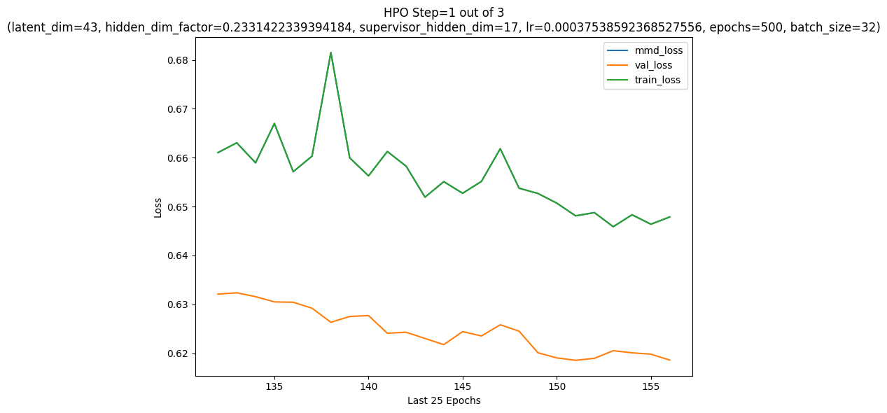
LOCAL_RANK: 0 - CUDA_VISIBLE_DEVICES: [0,1,2]
┏━━━━━━━━━━━━━━━━━━━━━━━━━━━┳━━━━━━━━━━━━━━━━━━━━━━━━━━━┓ ┃ Validate metric ┃ DataLoader 0 ┃ ┡━━━━━━━━━━━━━━━━━━━━━━━━━━━╇━━━━━━━━━━━━━━━━━━━━━━━━━━━┩ │ mmd_loss │ 0.6193145513534546 │ │ val_loss │ 0.6193145513534546 │ └───────────────────────────┴───────────────────────────┘
Tuning Progress: 33%|███▎ | 1/3 [01:09<02:19, 69.75s/it, Iteration=1, Best Loss=0.619]GPU available: True (cuda), used: True
TPU available: False, using: 0 TPU cores
💡 Tip: For seamless cloud logging and experiment tracking, try installing [litlogger](https://pypi.org/project/litlogger/) to enable LitLogger, which logs metrics and artifacts automatically to the Lightning Experiments platform.
LOCAL_RANK: 0 - CUDA_VISIBLE_DEVICES: [0,1,2]
[INFO] current best val loss: 0.6193145513534546; best params: {'latent_dim': 43, 'hidden_dim_factor': 0.2331422339394184, 'supervisor_hidden_dim': 17, 'lr': 0.00037538592368527556, 'epochs': 500, 'batch_size': 32} since 0 hpo iterations
[INFO] training validation split 1
[INFO] hpo config:{'latent_dim': 18, 'hidden_dim_factor': 0.49631671692080953, 'supervisor_hidden_dim': 18, 'lr': 0.0005870205355800884, 'epochs': 500, 'batch_size': 128}
┏━━━┳━━━━━━━━━━━━┳━━━━━━━━━━━━━━━┳━━━━━━━━┳━━━━━━━┳━━━━━━━┓ ┃ ┃ Name ┃ Type ┃ Params ┃ Mode ┃ FLOPs ┃ ┡━━━╇━━━━━━━━━━━━╇━━━━━━━━━━━━━━━╇━━━━━━━━╇━━━━━━━╇━━━━━━━┩ │ 0 │ log_vars │ ParameterDict │ 1 │ train │ 0 │ │ 1 │ encoders │ ModuleList │ 184 K │ train │ 0 │ │ 2 │ FC_mean │ Linear │ 666 │ train │ 0 │ │ 3 │ FC_log_var │ Linear │ 666 │ train │ 0 │ │ 4 │ decoders │ ModuleList │ 178 K │ train │ 0 │ │ 5 │ MLPs │ ModuleDict │ 0 │ train │ 0 │ └───┴────────────┴───────────────┴────────┴───────┴───────┘
Trainable params: 364 K Non-trainable params: 0 Total params: 364 K Total estimated model params size (MB): 1 Modules in train mode: 32 Modules in eval mode: 0 Total FLOPs: 0
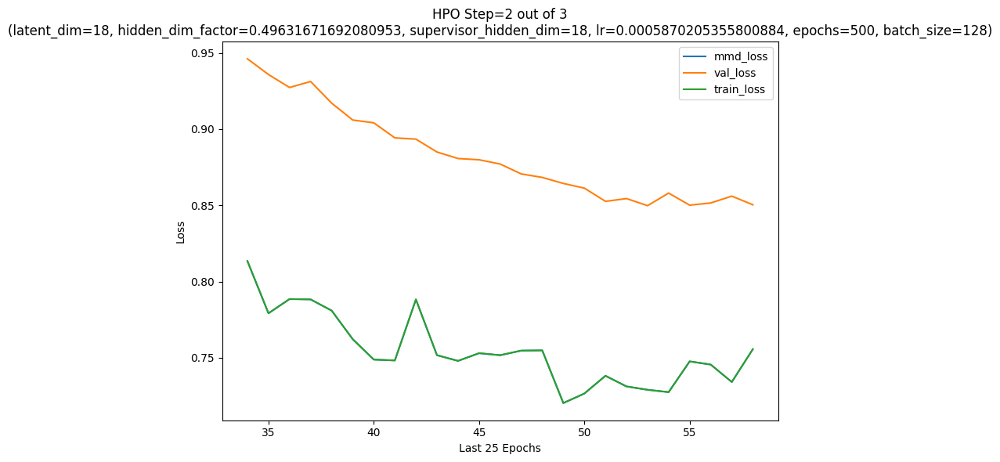
LOCAL_RANK: 0 - CUDA_VISIBLE_DEVICES: [0,1,2]
┏━━━━━━━━━━━━━━━━━━━━━━━━━━━┳━━━━━━━━━━━━━━━━━━━━━━━━━━━┓ ┃ Validate metric ┃ DataLoader 0 ┃ ┡━━━━━━━━━━━━━━━━━━━━━━━━━━━╇━━━━━━━━━━━━━━━━━━━━━━━━━━━┩ │ mmd_loss │ 0.8509323000907898 │ │ val_loss │ 0.8509323000907898 │ └───────────────────────────┴───────────────────────────┘
Tuning Progress: 67%|██████▋ | 2/3 [01:28<00:39, 39.68s/it, Iteration=2, Best Loss=0.619]GPU available: True (cuda), used: True
TPU available: False, using: 0 TPU cores
💡 Tip: For seamless cloud logging and experiment tracking, try installing [litlogger](https://pypi.org/project/litlogger/) to enable LitLogger, which logs metrics and artifacts automatically to the Lightning Experiments platform.
LOCAL_RANK: 0 - CUDA_VISIBLE_DEVICES: [0,1,2]
[INFO] current best val loss: 0.6193145513534546; best params: {'latent_dim': 43, 'hidden_dim_factor': 0.2331422339394184, 'supervisor_hidden_dim': 17, 'lr': 0.00037538592368527556, 'epochs': 500, 'batch_size': 32} since 1 hpo iterations
[INFO] training validation split 1
[INFO] hpo config:{'latent_dim': 104, 'hidden_dim_factor': 0.22682330069367787, 'supervisor_hidden_dim': 18, 'lr': 0.005731081904472266, 'epochs': 500, 'batch_size': 64}
┏━━━┳━━━━━━━━━━━━┳━━━━━━━━━━━━━━━┳━━━━━━━━┳━━━━━━━┳━━━━━━━┓ ┃ ┃ Name ┃ Type ┃ Params ┃ Mode ┃ FLOPs ┃ ┡━━━╇━━━━━━━━━━━━╇━━━━━━━━━━━━━━━╇━━━━━━━━╇━━━━━━━╇━━━━━━━┩ │ 0 │ log_vars │ ParameterDict │ 1 │ train │ 0 │ │ 1 │ encoders │ ModuleList │ 116 K │ train │ 0 │ │ 2 │ FC_mean │ Linear │ 21.7 K │ train │ 0 │ │ 3 │ FC_log_var │ Linear │ 21.7 K │ train │ 0 │ │ 4 │ decoders │ ModuleList │ 97.9 K │ train │ 0 │ │ 5 │ MLPs │ ModuleDict │ 0 │ train │ 0 │ └───┴────────────┴───────────────┴────────┴───────┴───────┘
Trainable params: 258 K Non-trainable params: 0 Total params: 258 K Total estimated model params size (MB): 1 Modules in train mode: 32 Modules in eval mode: 0 Total FLOPs: 0
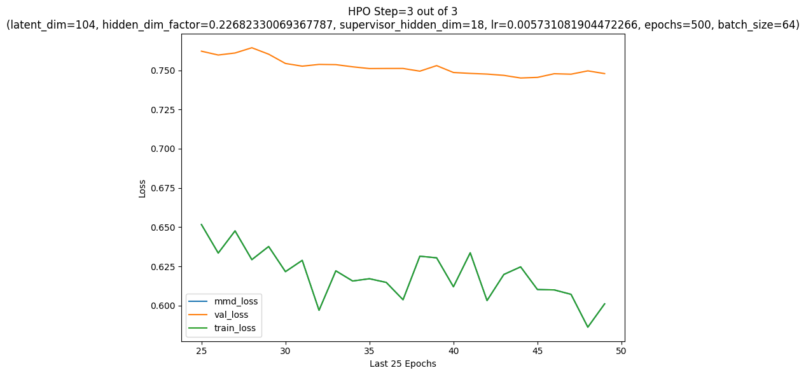
LOCAL_RANK: 0 - CUDA_VISIBLE_DEVICES: [0,1,2]
┏━━━━━━━━━━━━━━━━━━━━━━━━━━━┳━━━━━━━━━━━━━━━━━━━━━━━━━━━┓ ┃ Validate metric ┃ DataLoader 0 ┃ ┡━━━━━━━━━━━━━━━━━━━━━━━━━━━╇━━━━━━━━━━━━━━━━━━━━━━━━━━━┩ │ mmd_loss │ 0.7493896484375 │ │ val_loss │ 0.7493896484375 │ └───────────────────────────┴───────────────────────────┘
Tuning Progress: 100%|██████████| 3/3 [01:45<00:00, 35.23s/it, Iteration=3, Best Loss=0.619]
[INFO] current best val loss: 0.6193145513534546; best params: {'latent_dim': 43, 'hidden_dim_factor': 0.2331422339394184, 'supervisor_hidden_dim': 17, 'lr': 0.00037538592368527556, 'epochs': 500, 'batch_size': 32} since 2 hpo iterations
소요 시간: 1.8분 (106초)
저장 완료: ./models/supervised_vae_unsup.pth
E_unsup = model_unsup.transform(test_dataset)
cluster_labels, G, partition = flexynesis.utils.louvain_clustering(
E_unsup, # embedding DataFrame
k=10, # k-NN 그래프의 이웃 수 (클수록 큰 클러스터, default: None)
threshold=None, # 거리 threshold로 edge 연결 (k와 둘 중 하나만 사용, None=k 방식 사용)
)
print("클러스터 수:", len(set(cluster_labels)))
scores = flexynesis.utils.compute_ami_ari(
labels, # 레이블 세트 1 (실제 서브타입)
cluster_labels, # 레이블 세트 2 (클러스터)
# AMI=0 랜덤, 1=완벽 일치 / ARI=0 랜덤, 1=완벽 일치
)
print("AMI/ARI vs CLAUDIN_SUBTYPE:", scores)
클러스터 수: 5
AMI/ARI vs CLAUDIN_SUBTYPE: {'ami': 0.16914889091396618, 'ari': 0.10321242334587202}
# 클러스터 레이블로 UMAP
flexynesis.utils.plot_dim_reduced(E_unsup, cluster_labels, color_type='categorical', method='umap')
{kind=link}
flexynesis.utils.plot_label_concordance_heatmap(
labels, # 행 레이블 (실제 서브타입)
cluster_labels, # 열 레이블 (클러스터 번호)
figsize=(12, 6), # 플롯 크기
# 각 행(실제 레이블)이 각 클러스터에 얼마나 분포하는지 비율 (행 합=1)
)
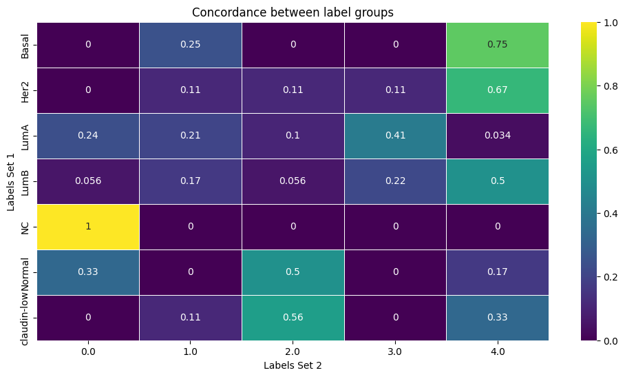
Section 5. MultiTripletNetwork — Metric Learning#
구조: 같은 클래스 샘플(positive) vs 다른 클래스 샘플(negative) triplet 구성
Loss: Triplet loss + CE (supervisor head)
→ latent space에서 같은 서브타입끼리 가깝게, 다른 서브타입끼리 멀게 학습
# ── MultiTripletNetwork 진단 ─────────────────────────────────────
# 1) TripletDataset 로딩 테스트
from flexynesis.data import TripletMultiOmicDataset
from torch.utils.data import DataLoader, random_split
import time
print('TripletMultiOmicDataset 생성 중...')
t0 = time.time()
triplet_ds = TripletMultiOmicDataset(train_dataset, 'CLAUDIN_SUBTYPE')
print(f' 완료 ({time.time()-t0:.1f}s), len={len(triplet_ds)}')
# 클래스별 샘플 수 확인 (1개 클래스=infinite loop 위험)
import numpy as np
labels = train_dataset.ann['CLAUDIN_SUBTYPE'].numpy()
unique, counts = np.unique(labels, return_counts=True)
print('클래스별 샘플 수:', dict(zip(unique.tolist(), counts.tolist())))
assert all(c >= 2 for c in counts), 'ERROR: 1개짜리 클래스 있음 → infinite loop!'
# 2) DataLoader 배치 1개 로딩 테스트
print('\nDataLoader 배치 테스트...')
t0 = time.time()
loader = DataLoader(triplet_ds, batch_size=16, num_workers=0, pin_memory=False)
batch = next(iter(loader))
print(f' 완료 ({time.time()-t0:.1f}s), batch keys: anchor={list(batch[0].keys())}')
print('진단 통과! DataLoader 정상')
TripletMultiOmicDataset 생성 중...
완료 (0.0s), len=199
클래스별 샘플 수: {0.0: 22, 1.0: 23, 2.0: 71, 3.0: 50, 4.0: 2, 5.0: 14, 6.0: 17}
DataLoader 배치 테스트...
완료 (0.0s), batch keys: anchor=['gex', 'cna']
진단 통과! DataLoader 정상
tuner_tri = flexynesis.main.HyperparameterTuning(
dataset=train_dataset,
model_class=flexynesis.models.MultiTripletNetwork,
target_variables=['CLAUDIN_SUBTYPE'], # triplet 구성의 기준 변수 (같은 클래스=positive)
config_name='MultiTripletNetwork',
# --- HPO 설정 ---
n_iter=HPO_ITER,
config_path=None,
val_size=0.2,
use_cv=False,
cv_splits=5,
# --- 학습 설정 ---
use_loss_weighting=True,
early_stop_patience=10,
plot_losses=True,
surv_event_var=None,
surv_time_var=None,
batch_variables=None,
device_type=None,
num_workers=0, # Jupyter에서 persistent_workers deadlock 방지
)
_t0 = time.time()
model_tri, params_tri = tuner_tri.perform_tuning()
print("Best params:", params_tri)
_elapsed = time.time() - _t0
training_log.append({'model': 'MultiTripletNetwork (분류)', 'time_sec': _elapsed, 'hpo_iter': HPO_ITER})
print(f'소요 시간: {_elapsed/60:.1f}분 ({_elapsed:.0f}초)')
os.makedirs('./models', exist_ok=True)
torch.save(model_tri, f'./models/MultiTripletNetwork_clf.pth')
print(f'저장 완료: ./models/MultiTripletNetwork_clf.pth')
Tuning Progress: 0%| | 0/3 [00:00<?, ?it/s]/home/cykim/miniforge3/envs/flexy/lib/python3.12/site-packages/lightning/fabric/plugins/environments/slurm.py:204: PossibleUserWarning: The `srun` command is available on your system but is not used. HINT: If your intention is to run Lightning on SLURM, prepend your python command with `srun` like so: srun python /home/cykim/miniforge3/envs/flexy/lib/python3.12/sit ...
GPU available: True (cuda), used: True
TPU available: False, using: 0 TPU cores
💡 Tip: For seamless cloud logging and experiment tracking, try installing [litlogger](https://pypi.org/project/litlogger/) to enable LitLogger, which logs metrics and artifacts automatically to the Lightning Experiments platform.
LOCAL_RANK: 0 - CUDA_VISIBLE_DEVICES: [0,1,2]
[INFO] training validation split 1
[INFO] hpo config:{'latent_dim': 124, 'hidden_dim_factor': 0.3673126478750132, 'supervisor_hidden_dim': 16, 'lr': 0.001448555708653014, 'epochs': 500, 'batch_size': 64}
┏━━━┳━━━━━━━━━━━━━━┳━━━━━━━━━━━━━━━┳━━━━━━━━┳━━━━━━━┳━━━━━━━┓ ┃ ┃ Name ┃ Type ┃ Params ┃ Mode ┃ FLOPs ┃ ┡━━━╇━━━━━━━━━━━━━━╇━━━━━━━━━━━━━━━╇━━━━━━━━╇━━━━━━━╇━━━━━━━┩ │ 0 │ log_vars │ ParameterDict │ 2 │ train │ 0 │ │ 1 │ encoders │ ModuleList │ 163 K │ train │ 0 │ │ 2 │ fusion_block │ Linear │ 30.9 K │ train │ 0 │ │ 3 │ MLPs │ ModuleDict │ 2.2 K │ train │ 0 │ └───┴──────────────┴───────────────┴────────┴───────┴───────┘
Trainable params: 196 K Non-trainable params: 0 Total params: 196 K Total estimated model params size (MB): 0 Modules in train mode: 22 Modules in eval mode: 0 Total FLOPs: 0
/home/cykim/miniforge3/envs/flexy/lib/python3.12/site-packages/lightning/pytorch/utilities/_pytree.py:21: FutureWarning: `isinstance(treespec, LeafSpec)` is deprecated, use `isinstance(treespec, TreeSpec) and treespec.is_leaf()` instead.
/home/cykim/miniforge3/envs/flexy/lib/python3.12/site-packages/lightning/pytorch/trainer/connectors/data_connector. py:434: PossibleUserWarning: The 'val_dataloader' does not have many workers which may be a bottleneck. Consider increasing the value of the `num_workers` argument` to `num_workers=127` in the `DataLoader` to improve performance.
/home/cykim/miniforge3/envs/flexy/lib/python3.12/site-packages/lightning/pytorch/trainer/connectors/data_connector. py:434: PossibleUserWarning: The 'train_dataloader' does not have many workers which may be a bottleneck. Consider increasing the value of the `num_workers` argument` to `num_workers=127` in the `DataLoader` to improve performance.
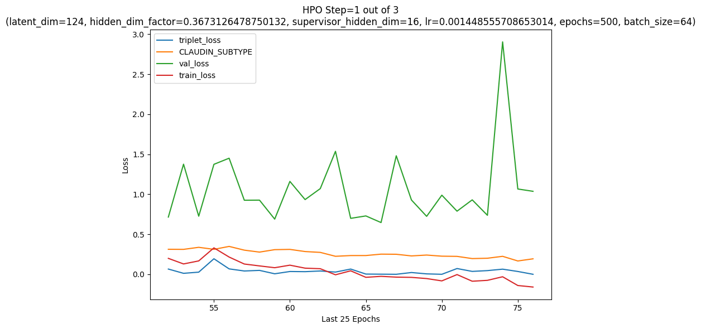
LOCAL_RANK: 0 - CUDA_VISIBLE_DEVICES: [0,1,2]
┏━━━━━━━━━━━━━━━━━━━━━━━━━━━┳━━━━━━━━━━━━━━━━━━━━━━━━━━━┓ ┃ Validate metric ┃ DataLoader 0 ┃ ┡━━━━━━━━━━━━━━━━━━━━━━━━━━━╇━━━━━━━━━━━━━━━━━━━━━━━━━━━┩ │ CLAUDIN_SUBTYPE │ 0.6612181067466736 │ │ triplet_loss │ 0.5941464304924011 │ │ val_loss │ 1.2553645372390747 │ └───────────────────────────┴───────────────────────────┘
Tuning Progress: 33%|███▎ | 1/3 [00:12<00:24, 12.35s/it, Iteration=1, Best Loss=1.26]GPU available: True (cuda), used: True
TPU available: False, using: 0 TPU cores
💡 Tip: For seamless cloud logging and experiment tracking, try installing [litlogger](https://pypi.org/project/litlogger/) to enable LitLogger, which logs metrics and artifacts automatically to the Lightning Experiments platform.
LOCAL_RANK: 0 - CUDA_VISIBLE_DEVICES: [0,1,2]
[INFO] current best val loss: 1.2553645372390747; best params: {'latent_dim': 124, 'hidden_dim_factor': 0.3673126478750132, 'supervisor_hidden_dim': 16, 'lr': 0.001448555708653014, 'epochs': 500, 'batch_size': 64} since 0 hpo iterations
[INFO] training validation split 1
[INFO] hpo config:{'latent_dim': 72, 'hidden_dim_factor': 0.4592911047805077, 'supervisor_hidden_dim': 12, 'lr': 0.0016164943109039617, 'epochs': 500, 'batch_size': 64}
┏━━━┳━━━━━━━━━━━━━━┳━━━━━━━━━━━━━━━┳━━━━━━━━┳━━━━━━━┳━━━━━━━┓ ┃ ┃ Name ┃ Type ┃ Params ┃ Mode ┃ FLOPs ┃ ┡━━━╇━━━━━━━━━━━━━━╇━━━━━━━━━━━━━━━╇━━━━━━━━╇━━━━━━━╇━━━━━━━┩ │ 0 │ log_vars │ ParameterDict │ 2 │ train │ 0 │ │ 1 │ encoders │ ModuleList │ 184 K │ train │ 0 │ │ 2 │ fusion_block │ Linear │ 10.4 K │ train │ 0 │ │ 3 │ MLPs │ ModuleDict │ 991 │ train │ 0 │ └───┴──────────────┴───────────────┴────────┴───────┴───────┘
Trainable params: 196 K Non-trainable params: 0 Total params: 196 K Total estimated model params size (MB): 0 Modules in train mode: 22 Modules in eval mode: 0 Total FLOPs: 0
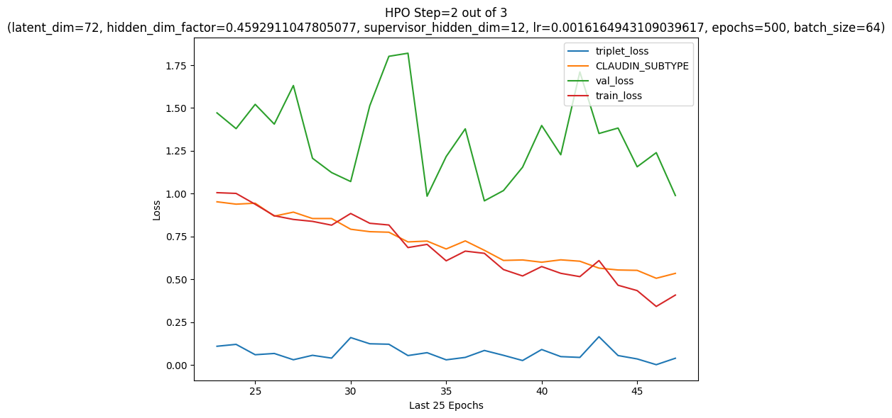
LOCAL_RANK: 0 - CUDA_VISIBLE_DEVICES: [0,1,2]
┏━━━━━━━━━━━━━━━━━━━━━━━━━━━┳━━━━━━━━━━━━━━━━━━━━━━━━━━━┓ ┃ Validate metric ┃ DataLoader 0 ┃ ┡━━━━━━━━━━━━━━━━━━━━━━━━━━━╇━━━━━━━━━━━━━━━━━━━━━━━━━━━┩ │ CLAUDIN_SUBTYPE │ 0.8535866141319275 │ │ triplet_loss │ 0.33389025926589966 │ │ val_loss │ 1.1874768733978271 │ └───────────────────────────┴───────────────────────────┘
Tuning Progress: 67%|██████▋ | 2/3 [00:20<00:09, 9.70s/it, Iteration=2, Best Loss=1.19]GPU available: True (cuda), used: True
TPU available: False, using: 0 TPU cores
💡 Tip: For seamless cloud logging and experiment tracking, try installing [litlogger](https://pypi.org/project/litlogger/) to enable LitLogger, which logs metrics and artifacts automatically to the Lightning Experiments platform.
LOCAL_RANK: 0 - CUDA_VISIBLE_DEVICES: [0,1,2]
[INFO] current best val loss: 1.1874768733978271; best params: {'latent_dim': 72, 'hidden_dim_factor': 0.4592911047805077, 'supervisor_hidden_dim': 12, 'lr': 0.0016164943109039617, 'epochs': 500, 'batch_size': 64} since 0 hpo iterations
[INFO] training validation split 1
[INFO] hpo config:{'latent_dim': 83, 'hidden_dim_factor': 0.23544398683385964, 'supervisor_hidden_dim': 26, 'lr': 0.00697155294703412, 'epochs': 500, 'batch_size': 64}
┏━━━┳━━━━━━━━━━━━━━┳━━━━━━━━━━━━━━━┳━━━━━━━━┳━━━━━━━┳━━━━━━━┓ ┃ ┃ Name ┃ Type ┃ Params ┃ Mode ┃ FLOPs ┃ ┡━━━╇━━━━━━━━━━━━━━╇━━━━━━━━━━━━━━━╇━━━━━━━━╇━━━━━━━╇━━━━━━━┩ │ 0 │ log_vars │ ParameterDict │ 2 │ train │ 0 │ │ 1 │ encoders │ ModuleList │ 96.8 K │ train │ 0 │ │ 2 │ fusion_block │ Linear │ 13.9 K │ train │ 0 │ │ 3 │ MLPs │ ModuleDict │ 2.4 K │ train │ 0 │ └───┴──────────────┴───────────────┴────────┴───────┴───────┘
Trainable params: 113 K Non-trainable params: 0 Total params: 113 K Total estimated model params size (MB): 0 Modules in train mode: 22 Modules in eval mode: 0 Total FLOPs: 0
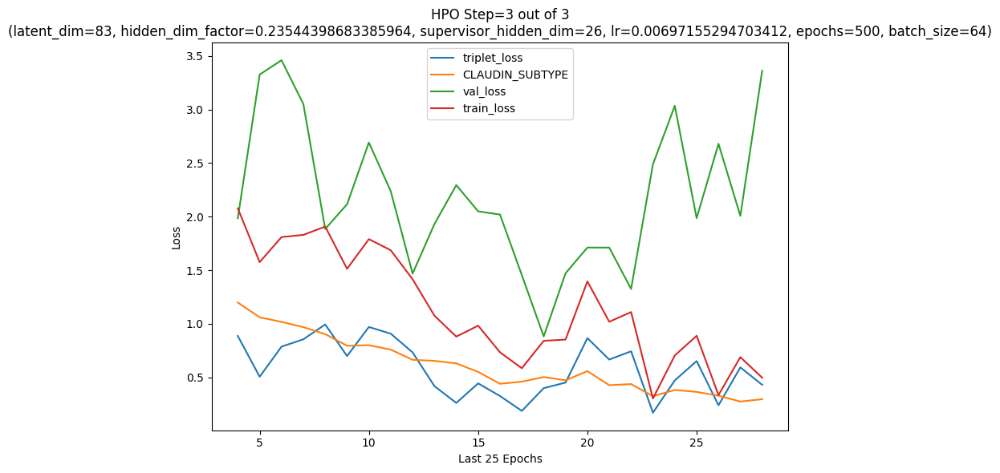
LOCAL_RANK: 0 - CUDA_VISIBLE_DEVICES: [0,1,2]
┏━━━━━━━━━━━━━━━━━━━━━━━━━━━┳━━━━━━━━━━━━━━━━━━━━━━━━━━━┓ ┃ Validate metric ┃ DataLoader 0 ┃ ┡━━━━━━━━━━━━━━━━━━━━━━━━━━━╇━━━━━━━━━━━━━━━━━━━━━━━━━━━┩ │ CLAUDIN_SUBTYPE │ 1.0909415483474731 │ │ triplet_loss │ 0.5885956883430481 │ │ val_loss │ 1.679537296295166 │ └───────────────────────────┴───────────────────────────┘
Tuning Progress: 100%|██████████| 3/3 [00:24<00:00, 8.19s/it, Iteration=3, Best Loss=1.19]
[INFO] current best val loss: 1.1874768733978271; best params: {'latent_dim': 72, 'hidden_dim_factor': 0.4592911047805077, 'supervisor_hidden_dim': 12, 'lr': 0.0016164943109039617, 'epochs': 500, 'batch_size': 64} since 1 hpo iterations
Best params: {'latent_dim': 72, 'hidden_dim_factor': 0.4592911047805077, 'supervisor_hidden_dim': 12, 'lr': 0.0016164943109039617, 'epochs': 47, 'batch_size': 64}
소요 시간: 0.4분 (25초)
저장 완료: ./models/MultiTripletNetwork_clf.pth
metrics_tri = flexynesis.utils.evaluate_wrapper(
method='MultiTripletNetwork',
y_pred_dict=model_tri.predict(test_dataset),
dataset=test_dataset,
)
all_metrics.append(metrics_tri)
metrics_tri
| method | var | variable_type | metric | value | |
|---|---|---|---|---|---|
| 0 | MultiTripletNetwork | CLAUDIN_SUBTYPE | categorical | balanced_acc | 0.523878 |
| 1 | MultiTripletNetwork | CLAUDIN_SUBTYPE | categorical | f1_score | 0.682997 |
| 2 | MultiTripletNetwork | CLAUDIN_SUBTYPE | categorical | kappa | 0.601329 |
| 3 | MultiTripletNetwork | CLAUDIN_SUBTYPE | categorical | average_auroc | 0.958794 |
| 4 | MultiTripletNetwork | CLAUDIN_SUBTYPE | categorical | average_aupr | 0.846374 |
E_tri = model_tri.transform(test_dataset)
labels_tri = [test_dataset.label_mappings['CLAUDIN_SUBTYPE'][x] for x in test_dataset.ann['CLAUDIN_SUBTYPE'].numpy()]
flexynesis.utils.plot_dim_reduced(E_tri, labels_tri, color_type='categorical', method='umap')
{kind=link}
Section 6. GNN — Graph Neural Network#
구조: STRING DB 단백질 상호작용 네트워크 기반 Graph Convolution
데이터: gex만 사용 (gene → protein node)
STRING DB 파일이 brca_metabric_processed/ 에 포함돼 있음
# GNN은 gex 단일 모달리티 + STRING DB 필요
from flexynesis.data import STRING, MultiOmicDatasetNW
data_importer_gnn = flexynesis.data.DataImporter(
path=PATH,
data_types=['gex'], # GNN은 gex만 (gene → protein node로 매핑)
concatenate=False,
top_percentile=10,
min_features=50,
correlation_threshold=0.9,
variance_threshold=0.8,
na_threshold=0.1,
log_transform=False,
covariates=None,
downsample=0,
restrict_to_features=None,
)
train_gnn_raw, test_gnn_raw = data_importer_gnn.import_data()
[INFO] ================= Importing Data =================
[INFO] Validating data folders...
[INFO] ----------------- Reading Data -----------------
[INFO] Importing ./brca_mini/train/clin.csv...
[INFO] Importing ./brca_mini/train/gex.csv...
[INFO] ----------------- Reading Data -----------------
[INFO] Importing ./brca_mini/test/clin.csv...
[INFO] Importing ./brca_mini/test/gex.csv...
[INFO] ----------------- Checking for problems with the input data -----------------
[INFO] Data structure is valid with no errors or warnings.
[INFO] ----------------- Processing Data (train) -----------------
[INFO] ----------------- Cleaning Up Data -----------------
[INFO] working on layer: gex
[INFO] Imputing NA values to median of features, affected # of cells in the matrix 2 # of rows: 2
[INFO] Number of NA values: 0
[INFO] DataFrame gex - Removed 16482 features.
[INFO] DataFrame gex - Removed 0 samples (0.00%).
[INFO] Implementing feature selection using laplacian score for layer: gex with 4121 features and 200 samples
Calculating Laplacian scores: 100%|██████████| 4121/4121 [00:00<00:00, 68060.56it/s]
Filtering redundant features: 100%|██████████| 412/412 [00:00<00:00, 9688.95it/s]
[INFO] ----------------- Processing Data (test) -----------------
[INFO] ----------------- Cleaning Up Data -----------------
[INFO] working on layer: gex
[INFO] Number of NA values: 0
[INFO] DataFrame gex - Removed 16482 features.
[INFO] DataFrame gex - Removed 0 samples (0.00%).
[INFO] ----------------- Harmonizing Data Sets -----------------
[INFO] ----------------- Finished Harmonizing -----------------
[INFO] ----------------- Normalizing Data -----------------
[INFO] ----------------- Normalizing Data -----------------
[INFO] Training Data Stats: {'feature_count in: gex': 369, 'sample_count': 200}
[INFO] Test Data Stats: {'feature_count in: gex': 369, 'sample_count': 80}
[INFO] Merging Feature Logs...
[INFO] Data import successful.
# STRING DB 자동 다운로드 & 캐시 (~/.cache/flexynesis/STRING/)
# 첫 실행 시 다운로드 시간 필요, 이후엔 캐시 사용
print("STRING DB 로딩 중...")
string_obj = STRING(organism=9606, node_name='gene_name')
graph_df = string_obj.graph_df
print(f"PPI interactions: {len(graph_df)}")
# MultiOmicDatasetNW로 래핑 (graph 정보 포함한 GNN용 dataset)
train_gnn = MultiOmicDatasetNW(train_gnn_raw, graph_df, modality_order=['gex'])
test_gnn = MultiOmicDatasetNW(test_gnn_raw, graph_df, modality_order=['gex'])
train_gnn.print_stats()
STRING DB 로딩 중...
PPI interactions: 95229
Dataset Statistics:
Number of nodes: 354
Total number of edges: 134
Number of node features per node: 1
Number of singletons (nodes with no edges): 225
Mean number of edges per node (excluding singletons): 2.08
Median number of edges per node (excluding singletons): 2
Max number of edges per node: 11
tuner_gnn = flexynesis.main.HyperparameterTuning(
dataset=train_gnn,
model_class=flexynesis.models.GNN,
target_variables=['CLAUDIN_SUBTYPE'],
config_name='GNN',
# --- HPO 설정 ---
n_iter=HPO_ITER,
config_path=None,
val_size=0.2,
use_cv=False,
cv_splits=5,
# --- 학습 설정 ---
use_loss_weighting=True,
early_stop_patience=10,
plot_losses=True,
surv_event_var=None,
surv_time_var=None,
batch_variables=None,
device_type=None,
# --- GNN 전용 ---
gnn_conv_type='GC', # 'GC'(기본), 'GCN', 'GAT', 'SAGE' 중 선택
)
_t0 = time.time()
model_gnn, params_gnn = tuner_gnn.perform_tuning()
print("Best params:", params_gnn)
_elapsed = time.time() - _t0
training_log.append({'model': 'GNN (분류)', 'time_sec': _elapsed, 'hpo_iter': HPO_ITER})
print(f'소요 시간: {_elapsed/60:.1f}분 ({_elapsed:.0f}초)')
os.makedirs('./models', exist_ok=True)
torch.save(model_gnn, f'./models/GNN_clf.pth')
print(f'저장 완료: ./models/GNN_clf.pth')
Tuning Progress: 0%| | 0/3 [00:00<?, ?it/s]/home/cykim/miniforge3/envs/flexy/lib/python3.12/site-packages/lightning/fabric/plugins/environments/slurm.py:204: PossibleUserWarning: The `srun` command is available on your system but is not used. HINT: If your intention is to run Lightning on SLURM, prepend your python command with `srun` like so: srun python /home/cykim/miniforge3/envs/flexy/lib/python3.12/sit ...
GPU available: True (cuda), used: True
TPU available: False, using: 0 TPU cores
💡 Tip: For seamless cloud logging and experiment tracking, try installing [litlogger](https://pypi.org/project/litlogger/) to enable LitLogger, which logs metrics and artifacts automatically to the Lightning Experiments platform.
LOCAL_RANK: 0 - CUDA_VISIBLE_DEVICES: [0,1,2]
[INFO] training validation split 1
[INFO] hpo config:{'latent_dim': 41, 'node_embedding_dim': 7, 'num_convs': 3, 'lr': 0.0028519159371770734, 'supervisor_hidden_dim': 15, 'epochs': 500, 'activation': 'relu', 'batch_size': 64}
┏━━━┳━━━━━━━━━━┳━━━━━━━━━━━━━━━┳━━━━━━━━┳━━━━━━━┳━━━━━━━┓ ┃ ┃ Name ┃ Type ┃ Params ┃ Mode ┃ FLOPs ┃ ┡━━━╇━━━━━━━━━━╇━━━━━━━━━━━━━━━╇━━━━━━━━╇━━━━━━━╇━━━━━━━┩ │ 0 │ log_vars │ ParameterDict │ 1 │ train │ 0 │ │ 1 │ encoders │ ModuleList │ 101 K │ train │ 0 │ │ 2 │ MLPs │ ModuleDict │ 772 │ train │ 0 │ └───┴──────────┴───────────────┴────────┴───────┴───────┘
Trainable params: 102 K Non-trainable params: 0 Total params: 102 K Total estimated model params size (MB): 0 Modules in train mode: 30 Modules in eval mode: 0 Total FLOPs: 0
/home/cykim/miniforge3/envs/flexy/lib/python3.12/site-packages/lightning/pytorch/utilities/_pytree.py:21: FutureWarning: `isinstance(treespec, LeafSpec)` is deprecated, use `isinstance(treespec, TreeSpec) and treespec.is_leaf()` instead.
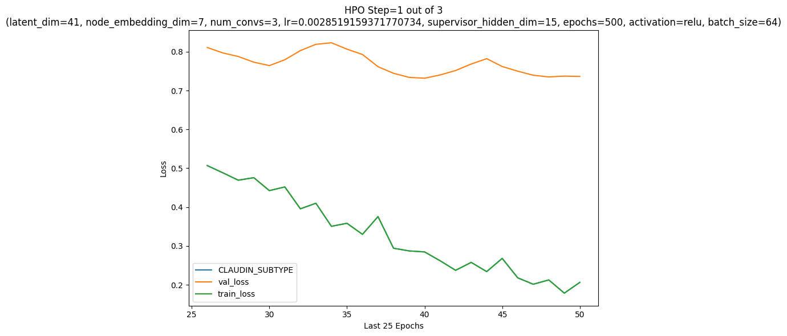
LOCAL_RANK: 0 - CUDA_VISIBLE_DEVICES: [0,1,2]
┏━━━━━━━━━━━━━━━━━━━━━━━━━━━┳━━━━━━━━━━━━━━━━━━━━━━━━━━━┓ ┃ Validate metric ┃ DataLoader 0 ┃ ┡━━━━━━━━━━━━━━━━━━━━━━━━━━━╇━━━━━━━━━━━━━━━━━━━━━━━━━━━┩ │ CLAUDIN_SUBTYPE │ 0.7364951968193054 │ │ val_loss │ 0.7364951968193054 │ └───────────────────────────┴───────────────────────────┘
Tuning Progress: 33%|███▎ | 1/3 [00:12<00:25, 12.66s/it, Iteration=1, Best Loss=0.736]GPU available: True (cuda), used: True
TPU available: False, using: 0 TPU cores
💡 Tip: For seamless cloud logging and experiment tracking, try installing [litlogger](https://pypi.org/project/litlogger/) to enable LitLogger, which logs metrics and artifacts automatically to the Lightning Experiments platform.
LOCAL_RANK: 0 - CUDA_VISIBLE_DEVICES: [0,1,2]
[INFO] current best val loss: 0.7364951968193054; best params: {'latent_dim': 41, 'node_embedding_dim': 7, 'num_convs': 3, 'lr': 0.0028519159371770734, 'supervisor_hidden_dim': 15, 'epochs': 500, 'activation': 'relu', 'batch_size': 64} since 0 hpo iterations
[INFO] training validation split 1
[INFO] hpo config:{'latent_dim': 77, 'node_embedding_dim': 6, 'num_convs': 4, 'lr': 0.000571941561416394, 'supervisor_hidden_dim': 13, 'epochs': 500, 'activation': 'relu', 'batch_size': 64}
┏━━━┳━━━━━━━━━━┳━━━━━━━━━━━━━━━┳━━━━━━━━┳━━━━━━━┳━━━━━━━┓ ┃ ┃ Name ┃ Type ┃ Params ┃ Mode ┃ FLOPs ┃ ┡━━━╇━━━━━━━━━━╇━━━━━━━━━━━━━━━╇━━━━━━━━╇━━━━━━━╇━━━━━━━┩ │ 0 │ log_vars │ ParameterDict │ 1 │ train │ 0 │ │ 1 │ encoders │ ModuleList │ 163 K │ train │ 0 │ │ 2 │ MLPs │ ModuleDict │ 1.1 K │ train │ 0 │ └───┴──────────┴───────────────┴────────┴───────┴───────┘
Trainable params: 165 K Non-trainable params: 0 Total params: 165 K Total estimated model params size (MB): 0 Modules in train mode: 35 Modules in eval mode: 0 Total FLOPs: 0
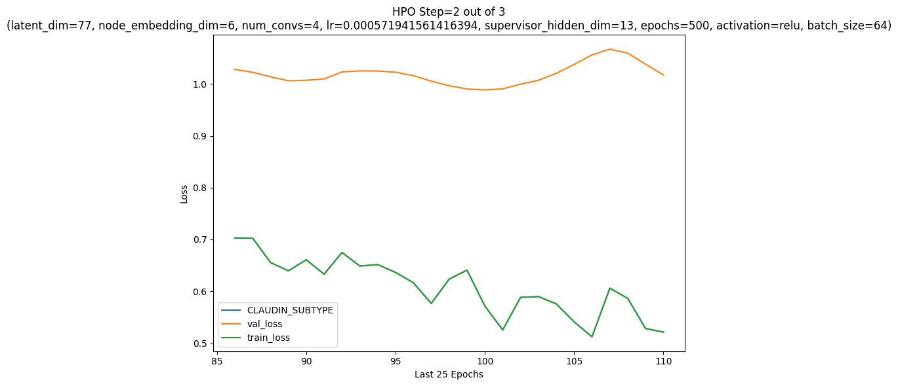
LOCAL_RANK: 0 - CUDA_VISIBLE_DEVICES: [0,1,2]
┏━━━━━━━━━━━━━━━━━━━━━━━━━━━┳━━━━━━━━━━━━━━━━━━━━━━━━━━━┓ ┃ Validate metric ┃ DataLoader 0 ┃ ┡━━━━━━━━━━━━━━━━━━━━━━━━━━━╇━━━━━━━━━━━━━━━━━━━━━━━━━━━┩ │ CLAUDIN_SUBTYPE │ 1.0175262689590454 │ │ val_loss │ 1.0175262689590454 │ └───────────────────────────┴───────────────────────────┘
Tuning Progress: 67%|██████▋ | 2/3 [00:47<00:25, 25.90s/it, Iteration=2, Best Loss=0.736]GPU available: True (cuda), used: True
TPU available: False, using: 0 TPU cores
💡 Tip: For seamless cloud logging and experiment tracking, try installing [litlogger](https://pypi.org/project/litlogger/) to enable LitLogger, which logs metrics and artifacts automatically to the Lightning Experiments platform.
LOCAL_RANK: 0 - CUDA_VISIBLE_DEVICES: [0,1,2]
[INFO] current best val loss: 0.7364951968193054; best params: {'latent_dim': 41, 'node_embedding_dim': 7, 'num_convs': 3, 'lr': 0.0028519159371770734, 'supervisor_hidden_dim': 15, 'epochs': 500, 'activation': 'relu', 'batch_size': 64} since 1 hpo iterations
[INFO] training validation split 1
[INFO] hpo config:{'latent_dim': 79, 'node_embedding_dim': 12, 'num_convs': 3, 'lr': 0.000730242269877518, 'supervisor_hidden_dim': 10, 'epochs': 500, 'activation': 'relu', 'batch_size': 128}
┏━━━┳━━━━━━━━━━┳━━━━━━━━━━━━━━━┳━━━━━━━━┳━━━━━━━┳━━━━━━━┓ ┃ ┃ Name ┃ Type ┃ Params ┃ Mode ┃ FLOPs ┃ ┡━━━╇━━━━━━━━━━╇━━━━━━━━━━━━━━━╇━━━━━━━━╇━━━━━━━╇━━━━━━━┩ │ 0 │ log_vars │ ParameterDict │ 1 │ train │ 0 │ │ 1 │ encoders │ ModuleList │ 336 K │ train │ 0 │ │ 2 │ MLPs │ ModuleDict │ 897 │ train │ 0 │ └───┴──────────┴───────────────┴────────┴───────┴───────┘
Trainable params: 337 K Non-trainable params: 0 Total params: 337 K Total estimated model params size (MB): 1 Modules in train mode: 30 Modules in eval mode: 0 Total FLOPs: 0
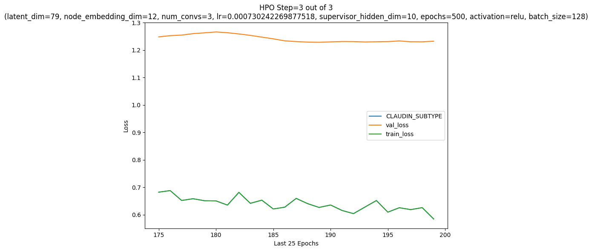
LOCAL_RANK: 0 - CUDA_VISIBLE_DEVICES: [0,1,2]
┏━━━━━━━━━━━━━━━━━━━━━━━━━━━┳━━━━━━━━━━━━━━━━━━━━━━━━━━━┓ ┃ Validate metric ┃ DataLoader 0 ┃ ┡━━━━━━━━━━━━━━━━━━━━━━━━━━━╇━━━━━━━━━━━━━━━━━━━━━━━━━━━┩ │ CLAUDIN_SUBTYPE │ 1.2328436374664307 │ │ val_loss │ 1.2328436374664307 │ └───────────────────────────┴───────────────────────────┘
Tuning Progress: 100%|██████████| 3/3 [01:48<00:00, 36.09s/it, Iteration=3, Best Loss=0.736]
[INFO] current best val loss: 0.7364951968193054; best params: {'latent_dim': 41, 'node_embedding_dim': 7, 'num_convs': 3, 'lr': 0.0028519159371770734, 'supervisor_hidden_dim': 15, 'epochs': 500, 'activation': 'relu', 'batch_size': 64} since 2 hpo iterations
Best params: {'latent_dim': 41, 'node_embedding_dim': 7, 'num_convs': 3, 'lr': 0.0028519159371770734, 'supervisor_hidden_dim': 15, 'epochs': 50, 'activation': 'relu', 'batch_size': 64}
소요 시간: 1.8분 (108초)
저장 완료: ./models/GNN_clf.pth
metrics_gnn = flexynesis.utils.evaluate_wrapper(
method='GNN',
y_pred_dict=model_gnn.predict(test_gnn),
dataset=test_gnn,
)
all_metrics.append(metrics_gnn)
metrics_gnn
| method | var | variable_type | metric | value | |
|---|---|---|---|---|---|
| 0 | GNN | CLAUDIN_SUBTYPE | categorical | balanced_acc | 0.508279 |
| 1 | GNN | CLAUDIN_SUBTYPE | categorical | f1_score | 0.616898 |
| 2 | GNN | CLAUDIN_SUBTYPE | categorical | kappa | 0.499091 |
| 3 | GNN | CLAUDIN_SUBTYPE | categorical | average_auroc | 0.907816 |
| 4 | GNN | CLAUDIN_SUBTYPE | categorical | average_aupr | 0.757394 |
E_gnn = model_gnn.transform(test_gnn)
labels_gnn = [test_gnn.label_mappings['CLAUDIN_SUBTYPE'][x] for x in test_gnn.ann['CLAUDIN_SUBTYPE'].numpy()]
flexynesis.utils.plot_dim_reduced(E_gnn, labels_gnn, color_type='categorical', method='umap')
{kind=link}
Section 7. CrossModalPred — Cross-Modal Prediction#
구조: input_layers → VAE encoders → latent → decoders (output_layers) + supervisor head
핵심: input_layers와 output_layers를 다르게 지정 → 한 omics로 다른 omics 예측
input_layers=['gex'],output_layers=['cna']→ gex로 cna 재구성input_layers == output_layers→ autoencoder처럼 동작
Loss: MMD (latent) + NLL (reconstruction) + CE (supervisor)
tuner_cross = flexynesis.main.HyperparameterTuning(
dataset=train_dataset,
model_class=flexynesis.models.CrossModalPred,
target_variables=['CLAUDIN_SUBTYPE'],
config_name='CrossModalPred',
# --- CrossModalPred 전용 ---
input_layers=['gex'], # 입력으로 사용할 omics 레이어
output_layers=['cna'], # 재구성(decode) 대상 omics 레이어 (input과 다르면 cross-modal)
# --- HPO 설정 ---
n_iter=HPO_ITER,
config_path=None,
val_size=0.2,
use_cv=False,
cv_splits=5,
# --- 학습 설정 ---
use_loss_weighting=True,
early_stop_patience=10,
plot_losses=True,
surv_event_var=None,
surv_time_var=None,
batch_variables=None,
device_type=None,
)
_t0 = time.time()
model_cross, params_cross = tuner_cross.perform_tuning()
print('Best params:', params_cross)
_elapsed = time.time() - _t0
training_log.append({'model': 'CrossModalPred (분류)', 'time_sec': _elapsed, 'hpo_iter': HPO_ITER})
print(f'소요 시간: {_elapsed/60:.1f}분 ({_elapsed:.0f}초)')
os.makedirs('./models', exist_ok=True)
torch.save(model_cross, f'./models/CrossModalPred_clf.pth')
print(f'저장 완료: ./models/CrossModalPred_clf.pth')
Tuning Progress: 0%| | 0/3 [00:00<?, ?it/s]/home/cykim/miniforge3/envs/flexy/lib/python3.12/site-packages/lightning/fabric/plugins/environments/slurm.py:204: PossibleUserWarning: The `srun` command is available on your system but is not used. HINT: If your intention is to run Lightning on SLURM, prepend your python command with `srun` like so: srun python /home/cykim/miniforge3/envs/flexy/lib/python3.12/sit ...
GPU available: True (cuda), used: True
TPU available: False, using: 0 TPU cores
💡 Tip: For seamless cloud logging and experiment tracking, try installing [litlogger](https://pypi.org/project/litlogger/) to enable LitLogger, which logs metrics and artifacts automatically to the Lightning Experiments platform.
LOCAL_RANK: 0 - CUDA_VISIBLE_DEVICES: [0,1,2]
[INFO] training validation split 1
[INFO] hpo config:{'latent_dim': 102, 'hidden_dim_factor': 0.25544383777949675, 'supervisor_hidden_dim': 13, 'lr': 0.0003443082413215302, 'epochs': 500, 'batch_size': 64}
┏━━━┳━━━━━━━━━━━━┳━━━━━━━━━━━━━━━┳━━━━━━━━┳━━━━━━━┳━━━━━━━┓ ┃ ┃ Name ┃ Type ┃ Params ┃ Mode ┃ FLOPs ┃ ┡━━━╇━━━━━━━━━━━━╇━━━━━━━━━━━━━━━╇━━━━━━━━╇━━━━━━━╇━━━━━━━┩ │ 0 │ log_vars │ ParameterDict │ 2 │ train │ 0 │ │ 1 │ encoders │ ModuleList │ 54.5 K │ train │ 0 │ │ 2 │ FC_mean │ Linear │ 10.5 K │ train │ 0 │ │ 3 │ FC_log_var │ Linear │ 10.5 K │ train │ 0 │ │ 4 │ decoders │ ModuleList │ 64.4 K │ train │ 0 │ │ 5 │ MLPs │ ModuleDict │ 1.5 K │ train │ 0 │ └───┴────────────┴───────────────┴────────┴───────┴───────┘
Trainable params: 141 K Non-trainable params: 0 Total params: 141 K Total estimated model params size (MB): 0 Modules in train mode: 25 Modules in eval mode: 0 Total FLOPs: 0
/home/cykim/miniforge3/envs/flexy/lib/python3.12/site-packages/lightning/pytorch/utilities/_pytree.py:21: FutureWarning: `isinstance(treespec, LeafSpec)` is deprecated, use `isinstance(treespec, TreeSpec) and treespec.is_leaf()` instead.
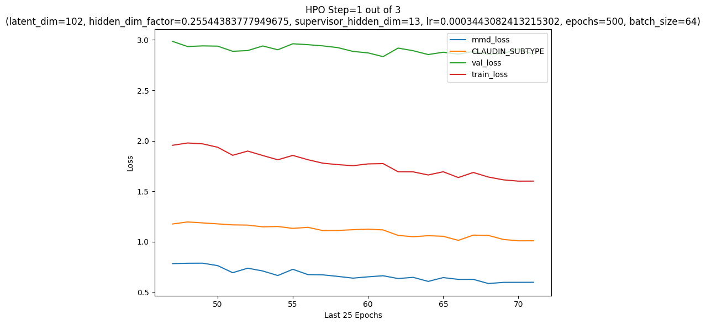
LOCAL_RANK: 0 - CUDA_VISIBLE_DEVICES: [0,1,2]
┏━━━━━━━━━━━━━━━━━━━━━━━━━━━┳━━━━━━━━━━━━━━━━━━━━━━━━━━━┓ ┃ Validate metric ┃ DataLoader 0 ┃ ┡━━━━━━━━━━━━━━━━━━━━━━━━━━━╇━━━━━━━━━━━━━━━━━━━━━━━━━━━┩ │ CLAUDIN_SUBTYPE │ 1.5806337594985962 │ │ mmd_loss │ 1.265005111694336 │ │ val_loss │ 2.8456387519836426 │ └───────────────────────────┴───────────────────────────┘
Tuning Progress: 33%|███▎ | 1/3 [00:16<00:33, 16.96s/it, Iteration=1, Best Loss=2.85]GPU available: True (cuda), used: True
TPU available: False, using: 0 TPU cores
💡 Tip: For seamless cloud logging and experiment tracking, try installing [litlogger](https://pypi.org/project/litlogger/) to enable LitLogger, which logs metrics and artifacts automatically to the Lightning Experiments platform.
LOCAL_RANK: 0 - CUDA_VISIBLE_DEVICES: [0,1,2]
[INFO] current best val loss: 2.8456387519836426; best params: {'latent_dim': 102, 'hidden_dim_factor': 0.25544383777949675, 'supervisor_hidden_dim': 13, 'lr': 0.0003443082413215302, 'epochs': 500, 'batch_size': 64} since 0 hpo iterations
[INFO] training validation split 1
[INFO] hpo config:{'latent_dim': 36, 'hidden_dim_factor': 0.3374774078478793, 'supervisor_hidden_dim': 31, 'lr': 0.0029140806223627116, 'epochs': 500, 'batch_size': 128}
┏━━━┳━━━━━━━━━━━━┳━━━━━━━━━━━━━━━┳━━━━━━━━┳━━━━━━━┳━━━━━━━┓ ┃ ┃ Name ┃ Type ┃ Params ┃ Mode ┃ FLOPs ┃ ┡━━━╇━━━━━━━━━━━━╇━━━━━━━━━━━━━━━╇━━━━━━━━╇━━━━━━━╇━━━━━━━┩ │ 0 │ log_vars │ ParameterDict │ 2 │ train │ 0 │ │ 1 │ encoders │ ModuleList │ 55.8 K │ train │ 0 │ │ 2 │ FC_mean │ Linear │ 1.3 K │ train │ 0 │ │ 3 │ FC_log_var │ Linear │ 1.3 K │ train │ 0 │ │ 4 │ decoders │ ModuleList │ 74.9 K │ train │ 0 │ │ 5 │ MLPs │ ModuleDict │ 1.4 K │ train │ 0 │ └───┴────────────┴───────────────┴────────┴───────┴───────┘
Trainable params: 134 K Non-trainable params: 0 Total params: 134 K Total estimated model params size (MB): 0 Modules in train mode: 25 Modules in eval mode: 0 Total FLOPs: 0
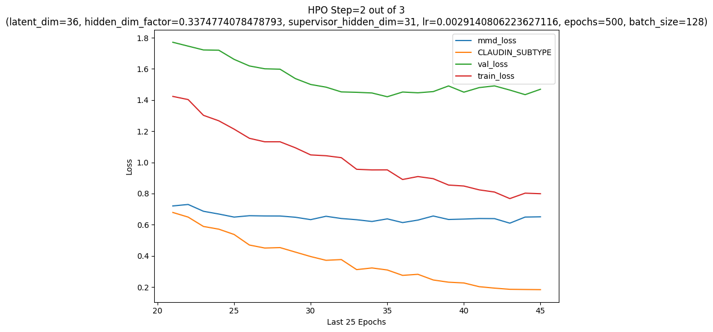
LOCAL_RANK: 0 - CUDA_VISIBLE_DEVICES: [0,1,2]
┏━━━━━━━━━━━━━━━━━━━━━━━━━━━┳━━━━━━━━━━━━━━━━━━━━━━━━━━━┓ ┃ Validate metric ┃ DataLoader 0 ┃ ┡━━━━━━━━━━━━━━━━━━━━━━━━━━━╇━━━━━━━━━━━━━━━━━━━━━━━━━━━┩ │ CLAUDIN_SUBTYPE │ 0.7386191487312317 │ │ mmd_loss │ 0.7641282081604004 │ │ val_loss │ 1.5027472972869873 │ └───────────────────────────┴───────────────────────────┘
Tuning Progress: 67%|██████▋ | 2/3 [00:31<00:15, 15.78s/it, Iteration=2, Best Loss=1.5] GPU available: True (cuda), used: True
TPU available: False, using: 0 TPU cores
💡 Tip: For seamless cloud logging and experiment tracking, try installing [litlogger](https://pypi.org/project/litlogger/) to enable LitLogger, which logs metrics and artifacts automatically to the Lightning Experiments platform.
LOCAL_RANK: 0 - CUDA_VISIBLE_DEVICES: [0,1,2]
[INFO] current best val loss: 1.5027472972869873; best params: {'latent_dim': 36, 'hidden_dim_factor': 0.3374774078478793, 'supervisor_hidden_dim': 31, 'lr': 0.0029140806223627116, 'epochs': 500, 'batch_size': 128} since 0 hpo iterations
[INFO] training validation split 1
[INFO] hpo config:{'latent_dim': 97, 'hidden_dim_factor': 0.4489759411775175, 'supervisor_hidden_dim': 25, 'lr': 0.0013637458993481124, 'epochs': 500, 'batch_size': 32}
┏━━━┳━━━━━━━━━━━━┳━━━━━━━━━━━━━━━┳━━━━━━━━┳━━━━━━━┳━━━━━━━┓ ┃ ┃ Name ┃ Type ┃ Params ┃ Mode ┃ FLOPs ┃ ┡━━━╇━━━━━━━━━━━━╇━━━━━━━━━━━━━━━╇━━━━━━━━╇━━━━━━━╇━━━━━━━┩ │ 0 │ log_vars │ ParameterDict │ 2 │ train │ 0 │ │ 1 │ encoders │ ModuleList │ 94.5 K │ train │ 0 │ │ 2 │ FC_mean │ Linear │ 9.5 K │ train │ 0 │ │ 3 │ FC_log_var │ Linear │ 9.5 K │ train │ 0 │ │ 4 │ decoders │ ModuleList │ 111 K │ train │ 0 │ │ 5 │ MLPs │ ModuleDict │ 2.7 K │ train │ 0 │ └───┴────────────┴───────────────┴────────┴───────┴───────┘
Trainable params: 227 K Non-trainable params: 0 Total params: 227 K Total estimated model params size (MB): 0 Modules in train mode: 25 Modules in eval mode: 0 Total FLOPs: 0
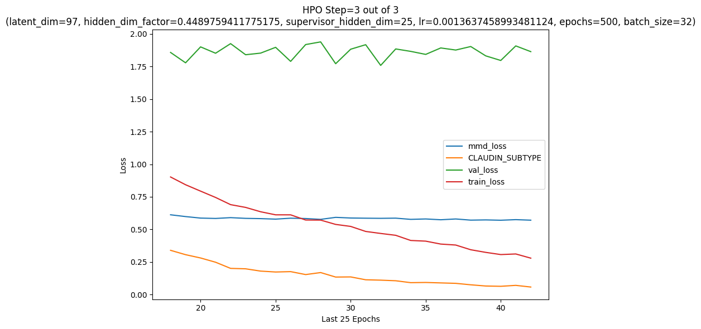
LOCAL_RANK: 0 - CUDA_VISIBLE_DEVICES: [0,1,2]
┏━━━━━━━━━━━━━━━━━━━━━━━━━━━┳━━━━━━━━━━━━━━━━━━━━━━━━━━━┓ ┃ Validate metric ┃ DataLoader 0 ┃ ┡━━━━━━━━━━━━━━━━━━━━━━━━━━━╇━━━━━━━━━━━━━━━━━━━━━━━━━━━┩ │ CLAUDIN_SUBTYPE │ 0.7819002270698547 │ │ mmd_loss │ 1.024790644645691 │ │ val_loss │ 1.8066909313201904 │ └───────────────────────────┴───────────────────────────┘
Tuning Progress: 100%|██████████| 3/3 [00:51<00:00, 17.16s/it, Iteration=3, Best Loss=1.5]
[INFO] current best val loss: 1.5027472972869873; best params: {'latent_dim': 36, 'hidden_dim_factor': 0.3374774078478793, 'supervisor_hidden_dim': 31, 'lr': 0.0029140806223627116, 'epochs': 500, 'batch_size': 128} since 1 hpo iterations
Best params: {'latent_dim': 36, 'hidden_dim_factor': 0.3374774078478793, 'supervisor_hidden_dim': 31, 'lr': 0.0029140806223627116, 'epochs': 45, 'batch_size': 128}
소요 시간: 0.9분 (51초)
저장 완료: ./models/CrossModalPred_clf.pth
metrics_cross = flexynesis.utils.evaluate_wrapper(
method='CrossModalPred',
y_pred_dict=model_cross.predict(test_dataset),
dataset=test_dataset,
)
all_metrics.append(metrics_cross)
metrics_cross
| method | var | variable_type | metric | value | |
|---|---|---|---|---|---|
| 0 | CrossModalPred | CLAUDIN_SUBTYPE | categorical | balanced_acc | 0.586549 |
| 1 | CrossModalPred | CLAUDIN_SUBTYPE | categorical | f1_score | 0.708443 |
| 2 | CrossModalPred | CLAUDIN_SUBTYPE | categorical | kappa | 0.627455 |
| 3 | CrossModalPred | CLAUDIN_SUBTYPE | categorical | average_auroc | 0.922769 |
| 4 | CrossModalPred | CLAUDIN_SUBTYPE | categorical | average_aupr | 0.773932 |
E_cross = model_cross.transform(test_dataset)
labels_cross = [test_dataset.label_mappings['CLAUDIN_SUBTYPE'][x] for x in test_dataset.ann['CLAUDIN_SUBTYPE'].numpy()]
flexynesis.utils.plot_dim_reduced(E_cross, labels_cross, color_type='categorical', method='umap')
{kind=link}
Section 8. 모델 성능 비교#
분류 태스크 (CLAUDIN_SUBTYPE) 기준 모델 비교
# 학습 시간 요약
log_df = pd.DataFrame(training_log)
log_df['time_min'] = (log_df['time_sec'] / 60).round(1)
log_df['time_sec'] = log_df['time_sec'].round(0).astype(int)
log_df = log_df[['model', 'hpo_iter', 'time_min', 'time_sec']]
log_df.columns = ['모델', 'HPO iter', '시간 (분)', '시간 (초)']
log_df
| 모델 | HPO iter | 시간 (분) | 시간 (초) | |
|---|---|---|---|---|
| 0 | DirectPred (분류) | 3 | 0.9 | 52 |
| 1 | DirectPred (생존분석) | 3 | 0.3 | 15 |
| 2 | supervised_vae (분류) | 3 | 1.6 | 95 |
| 3 | supervised_vae (비지도) | 3 | 1.8 | 106 |
| 4 | MultiTripletNetwork (분류) | 3 | 0.4 | 25 |
| 5 | GNN (분류) | 3 | 1.8 | 108 |
| 6 | CrossModalPred (분류) | 3 | 0.9 | 51 |
# 분류 메트릭만 합치기
clf_metrics = [m for m in all_metrics if 'balanced_acc' in m['metric'].values]
comparison = pd.concat(clf_metrics, ignore_index=True)
# 피벗으로 보기 좋게
pivot = comparison.pivot_table(index='method', columns='metric', values='value')
pivot = pivot[['balanced_acc', 'f1_score', 'kappa', 'average_auroc', 'average_aupr']]
pivot.sort_values('average_auroc', ascending=False)
| metric | balanced_acc | f1_score | kappa | average_auroc | average_aupr |
|---|---|---|---|---|---|
| method | |||||
| MultiTripletNetwork | 0.523878 | 0.682997 | 0.601329 | 0.958794 | 0.846374 |
| CrossModalPred | 0.586549 | 0.708443 | 0.627455 | 0.922769 | 0.773932 |
| DirectPred | 0.578612 | 0.717311 | 0.648913 | 0.914193 | 0.769647 |
| GNN | 0.508279 | 0.616898 | 0.499091 | 0.907816 | 0.757394 |
| supervised_vae | 0.593459 | 0.718927 | 0.655808 | 0.900751 | 0.796573 |
| DirectPred_survival | 0.500000 | 0.450000 | 0.000000 | 0.480469 | 0.550953 |
import matplotlib.pyplot as plt
fig, ax = plt.subplots(figsize=(10, 4))
pivot[['balanced_acc', 'f1_score', 'average_auroc']].plot(
kind='bar', ax=ax, rot=0
)
ax.set_title('Model Comparison — CLAUDIN_SUBTYPE Classification')
ax.set_ylim(0, 1)
ax.axhline(0.5, color='gray', linestyle='--', alpha=0.5, label='random')
ax.legend(loc='lower right')
plt.tight_layout()
plt.show()
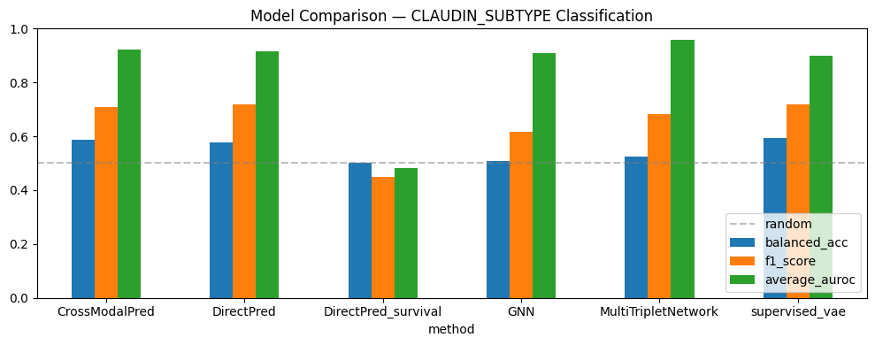
# Feature importance 계산 (Integrated Gradients / GradientShap via Captum)
# compute_feature_importance(dataset, var, method='IntegratedGradients')
# method: 'IntegratedGradients' (default) or 'GradientShap'
model_dp.compute_feature_importance(train_dataset, 'CLAUDIN_SUBTYPE')
flexynesis.utils.get_important_features(
model_dp, # feature importance가 계산된 모델
var='CLAUDIN_SUBTYPE', # 확인할 타겟 변수
top=15, # 상위 N개 반환 (default: 20)
# 반환: layer, name, target_class, importance 컬럼 포함 DataFrame
)
/home/cykim/flexynesis/flexynesis/utils.py:953: FutureWarning: DataFrameGroupBy.apply operated on the grouping columns. This behavior is deprecated, and in a future version of pandas the grouping columns will be excluded from the operation. Either pass `include_groups=False` to exclude the groupings or explicitly select the grouping columns after groupby to silence this warning.
| target_variable | target_class | target_class_label | layer | name | importance | |
|---|---|---|---|---|---|---|
| 0 | CLAUDIN_SUBTYPE | 0 | Basal | gex | CHEK1 | 0.065289 |
| 1 | CLAUDIN_SUBTYPE | 0 | Basal | gex | VAMP5 | 0.058433 |
| 2 | CLAUDIN_SUBTYPE | 0 | Basal | gex | ARMT1 | 0.055017 |
| 3 | CLAUDIN_SUBTYPE | 0 | Basal | gex | TMEM123 | 0.053406 |
| 4 | CLAUDIN_SUBTYPE | 0 | Basal | gex | PRNP | 0.052028 |
| ... | ... | ... | ... | ... | ... | ... |
| 100 | CLAUDIN_SUBTYPE | 6 | claudin-low | gex | CAV1 | 0.083017 |
| 101 | CLAUDIN_SUBTYPE | 6 | claudin-low | gex | LOC146880 | 0.082042 |
| 102 | CLAUDIN_SUBTYPE | 6 | claudin-low | gex | SRPX | 0.080470 |
| 103 | CLAUDIN_SUBTYPE | 6 | claudin-low | gex | TGFBR2 | 0.079978 |
| 104 | CLAUDIN_SUBTYPE | 6 | claudin-low | gex | FDCSP | 0.077379 |
105 rows × 6 columns